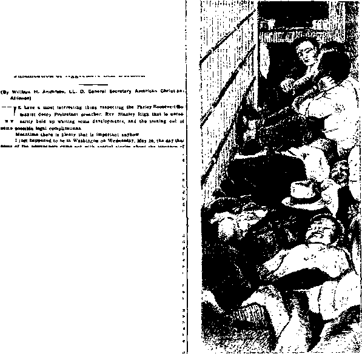

Preparing to honor future ‘‘Unknown Soldiers”
A JOURNAL OF FACT HOPE AND COURAGE
IIIIIIIIIIIIIIIIIIIIIIII1IIIIIIIIIIIIIIIIIIIIIHIIIIIIIIIIIIIIIIIIIIIIIIIIIIIIII
in this issue
INTERNATIONAL MURDERERS
J W’S IN THE LIMELIGHT MURDERERS AND THEIR FINISH iiiiiiiiiiiiiiiiiiiiiiiiiiiiiiiiiiiiiiiiiiiiiiiiiiiiiiiiiiiiiiiiniiiiiiiiiiiiii every other WEDNES DAY five cents a copy one dollar a year Canada & Foreign 1.25
Vol. XVII-No. 441
August 12, 1936
•• qXq) • ■■ ■ ■ ■■ ■ — ■ ii ■■■!■■■ «■■■■■ —■
CONTENTS
-rKg).-. . .. -----
SOCIAL AND EDUCATIONAL
Exciting Times in
Jehovah's witnesses in
The Devil Getting Sore, In Nova Scotia
Enterprising Witnesses in N. Z.
Will the Roman Catholic
FINANCE—COMMERCE—TRANSPORTATION
International Murderers— The Super-Gangsters of ‘ ‘ Christendom ’ ’
Munitions, Militarism, Fascism
POLITICAL—DOMESTIC AND FOREIGN
Politicians Double-Cross Gambler
Paid Ralph Conner to Be Patriotic
HOME AND HEALTH
Awoke from a Four Years’ Sleep 727
TRAVEL AND MISCELLANY
|
Origin of Foolscap Paper |
727 |
|
Canadian Condensations |
728 |
|
The Crown of Adishwar |
729 |
|
Poor Little Hyderabad Kid |
729 |
|
Will Celebrate with Radios |
729 |
|
Kangaroos Plentiful in Wagga |
730 |
|
In the Land of Too Much Food |
735 |
RELIGION AND PHILOSOPHY
Confesses Clergy Hate Bible 727
Wail from Victoria and Tasmania 730
Published every other Wednesday by
GOLDEN AGE PUBLISHING COMPANY, INC.
117 Adams Street, Brooklyn, N. Y., U. S. A.
Clayton J. Woodworth President Nathan H. Knorr Vice President
Charles E. Wagner Secretary and Treasurer
FIVE CENTS A COPY
$1 a year, United States; $1.25 to Canada and all other countries.
Notice to Subscribers
Remittances : For your own safety, remit by postal or express money order. When coin or currency is lost in the ordinary mails, there is no redress. Remittances from countries other than those named below may be made to the Brooklyn office, but only by international postal money order.
Receipt of a new or renewal subscription will be acknowledged only when requested. Notice of exitration is sent with the journal one month before subscription expires. Please renew promptly to avoid loss of copies.
Send change of address direct to us rather than to the post office. Your request should reach us at least two weeks before the date of issue with which it is to take effect. Send your old as well as the new address. Copies will not be forwarded by the post office to your new address unless extra postage is provided by you.
Published also in Bohemian, Danish, Dutch, Finnish, French. German, Greek, Japanese, Norwegian, Polish, Spanish, Swedish.
British Canadian-Australasian South African Entered as second-class
Offices for Other Countries
34 Craven Terrace, London, W. 2. England
40 Irwin Avenue, Toronto 5. Ontario, Canada
7 Beresford Road. Strathfield, N. S. W., Australia Boston House, Cape Town, South Africa matter at Brooklyn, N. Y”., under the Act of March 3, 1879.
Volume XVII Brooklyn, N.Y., Wednesday, August 12, 1936 Number 441
International Murderers—The Super-Gangsters of “Christendom”
Dutch Schultz, New York’s racketeer, missed his calling. He had all the instincts of an international munition maker but lacked the training and the backing to get into the billionaire class of murderers. To be sure, at the close of his earthly life he received the “blessing” of the Roman Catholic Hierarchy and was received into the fold and was glorified in The Literary Digest, but it was too late to do him any good.
Preparing to honor future ‘‘Unknown Soldiers”
The munition maker gets his in this life, and gets it by the billion. Newspapers write what he tells them to write. Popes and prelates are stockholders in his assassination enterprises. Banks do what he tells them. When he speaks governments are silent or reverse their policies. Politicians are his clerks. And when he goes out of this life he literally leaves millions of mourners behind him, including the armless, legless and sightless soldiers and those who went insane as a result of his gangster activities.
The notion has been widely spread that war makes men manly and that, therefore, since the making of munitions is necessary to modern warfare, it is a calling that is in every way honorable. But in these days there are some who see differently, and occasionally there is even one such among the clergy. The following is from the pen of the Anglican clergyman Dean
Inge, in his work Christian Ethics and Modern Problems:
“The notion that war is good for the virility of a nation is absolutely untrue, at least under modern conditions. The courage which it evokes it did not implant ; the injury which it does to the racial stock continues to impair the quality of the race for many generations. There is no difference of opinion among eu-genists on this point.
Thucydides tells how an Athenian ungenerously taunted a Spartan prisoner by asking him whether all their brave men had been killed. ‘ ‘ The arrow would be a useful weapon,” was the reply, “if it picked out the best men to hit. ’ ’ So would the bullet. An epigram in the Greek Anthology says bluntly that the war-god spares not the good, but the bad.... This is more true of modern than of ancient war.
“The effect of war,” says Professor Starr Jordan, writing in the year before the Great War, “is to spoil the breed by the simple process of the reversion of selection.” . . . Nations have always chosen for war the best men they could get, and they have always got better than those whom they left at home.
This counter-selection was one cause of the decline of Greece and Rome, and in the same way at the beginning of the modern period the vigorous race of Spaniards was enfeebled by war and persecution. “Castile makes men and wastes them,” says an old writer. Some persons naively expressed surprise that after a hundred years of peace in Europe Englishmen fought better than ever. And yet Japan, after two hundred years of peace, has astonished the world by the valor of her soldiers in her war with Russia. Napoleon “peopled Hades with the elite of Europe”; the evil which he did can never be measured.
Starr Jordan thinks that the United States has never fully recovered from the dysgenic slaughter of the Civil War from 1SG1 to 1835, in which nearly one in thirty of the whole population lost their lives. The statement often repeated that the Napoleonic War lowered the average height of Frenchmen, some have said by three inches, seems to be untrue; but there is no doubt that the war increased defects and infirmities in the next generation. That “war children” tend to be inferior was known before the Great War.
There is really no doubt whatever that war, next to wholesale class-bribery by taxation, is the most dysgenic factor in modern life. I cannot refrain from quoting the vigorous language in which Santayana (in 1S05) emphasizes this truth, preaching, alas! to deaf ears: ‘ ‘ There are panegyrists of war who say that without a periodical bleeding a race decays and loses its manhood. Experience is directly opposed to this shameless assertion. It is war that wastes a nation’s wealth, kills its flower, narrows its sympathies, condemns it to be governed by adventurers, and leaves the puny, deformed, and unmanly to breed the next generation. ’ ’
It happens also in the educational field that there is here and there a guide of youth who is not influenced by the golden tide that flows into the coffers of the munition makers. Thus Dr. G-. Bromley Exnam, president of DePauw University, is quoted in the Indianapolis Star as saying:
Propaganda traceable directly to munition makers states there is Communism in American colleges. But who are the munition makers? They are men who profiteered when American soldiers were dying in France. They are selling war supplies to potential enemies at this moment. Research conducted by college professors has brought their treachery to light. They would discredit the colleges. Why?
Gigantic power corporations, through subsidized propaganda, state that Communism is rampant in American colleges. Why? Read the testimony given before the Federal Trade Commission. Why have power corporations sought to control newspapers, to subsidize and thereby control educational institutions, and to gain control of legislative institutions that should be dedicated to the common good? College research has revealed the menacing nature of these unpatriotic activities that are in fact destroying democracy. Hence, a subtle, cowardly and indirect attack upon our institutions of higher learning.
Selfish reactionaries, with no constructive answer to the terrible problems of unemployment, sickness and old age, subsidize so-called patriotic societies, and these in turn propagandize the nation. They call proposals to eliminate child labor, to reduce unemployment, to provide for disability due to sickness, and to care for old age, communistic.
“Making the World Safe’’
When the munition makers saw their dreams coming true in 1914 and realized that there would be a great market for their wares if the war could be kept going, they did all that was humanly, and one could almost say, inhumanly possible to whip up enthusiasm for a cause in which their pawns, the common people, had little interest or little desire to participate.
Every statesman on the side of the Allies insisted with all his lung power that the World War was fought to make a better w’orld, one that would have no militarism; there would be permanent peace. The net result for Uncle Sam was a debt of $32,000,000,000, and the net results for the world were Stalin, Hitler, Horthy, Mussolini, and more to follow soon. Making the world safe for hypocrisy was surely expensive. On March 31, 1917, the federal debt of the United States was $1,282,044,346. On March 16, 1936, it was $31,859,000,000.
When it became apparent to the munition makers that Italy would strangle Ethiopia there was great happiness in their midst. All the things that would help men to kill one another went like hot cakes. This was a great comfort to clergymen holding munition shares. Cotton linters, used in making explosives, were at an all-time high, and so was the trade in scrap iron, useful for many war purposes. In 1934 the French purchased 25,494 tons of benzols (useful for explosives), as against 9,284 tons the year before. Metallic cartridges, rifles, machine and heavy ordnance guns, explosives, projectiles and gunpowder were in great demand.
The munition makers are always on the job when there is a chance to sell something wherewith one man may take the life of another, or a million men take the lives of a million, but they sometimes err. They recently lost 537 barrels of guns at Palestine. Plans were laid to smuggle in the guns as cement. When half the drums had been landed, one was found damaged. It was opened and found packed with revolvers and cartridges. The other drums were also opened. Nobody claimed them. Billionaire gangsters cannot afford to get caught.
Item: The Savage Arms Company, one of the lesser firms of munition makers, reported sales for the year 1934 as $2,336,662.48.
From the time that the knights went to battle on horseback looking like a Baltimore heater with a teakettle on top of it the makers of armor plate, guns, bullets and other war junk have appealed to the vanity of men and women to help them increase the market for their goods.
There are plenty of men that for the sake of donning a uniform would do things to which they would never otherwise stoop, and there are plenty of women who rejoice to have their sons butchered so that they can boast and get their names in the papers. However, some of the mothers have both hearts and brains. Airs. Frieda Wandless, Camden, N. J., seems to be one of these. In a letter to the Camden Courier, January 12, 1936, she said:
MOTHERS! Cover yourselves with GLORY—• Trade in your best son, and receive a GOLD STAR in exchange.
War is the ignoble trick of slitting open the blood vessels of the excited working class to “satisfy” the “honor” and save the pride and business of crowned and uncrowned cowards of the ruling class. There never is a war and never can be a war until the workingmen are willing to do the marching, the trench-digging and the actual fighting, bleeding and dying. And the workingmen are never willing to butcher and be butchered wholesale until the capitalist class or “highly educated” hirelings of the capitalist class craftily or ignorantly excite the humble toilers to the fiend's stupid mood of savage hate.
First come the powerful editorials, the “great speeches, ’ ’ the eloquent sermons, and prayers for war.
Then the fife and drum, then the brainstorm of the humble, humbugged workingmen, then the recruiting, then the hand-waving and “good-bye boys, good-bye,” then the butchering and the blood, then the tears and taxes.
But every lily-fingered snob, every socially gilt-edged coward, every pro-war preacher, every selfexempting political shark and every well-fed money glutton, who dares help excite the working class for the hell of war—these, every one of these, in case of war, should be forced to dance on the firing line to the hideous music of the cannon’s roar until his own torn carcass decorates a “great battle” field.
I have taught my son that the most degrading thing a man can do is to become a soldier. He will not assassinate some other mother’s son and then hide his stained fists in the folds of a flag and call it patriotism.
Veterans of Future Wars, started at Princeton University as a satire on militarism and hypocrisy, has grown to 360 posts with 30,000 members-; one post in every state except Nevada.
Future Wars and the
The future Veterans say their organization is permanent and that the next time Hearst and the munition makers and bankers want to drag the United States into a war, they will have something to say.
The young men at the Presbyterian Theological Seminary at Omaha, Nebraska, have organized the first chapter of Chaplains of Future Wars, and thereby greatly amused and encouraged those who got such huge satisfaction out of the organization of the Veterans of Gold Star Mothers of
Veterans of Future Wars. All the hypocrites are getting sore now’ at the boys and girls that are on to them.
In Germany, Italy and other countries which are villeinholds of the munition makers the preparation of cannon fodder begins while the child is playing w’ith his toys. In San Diego last winter the toystores carried motorized field artillery tanks and machine guns. In Chicago the collection and burning of toy guns from school children resulted in six hundred less accidents from guns in 1935 than in 1934. Parents can turn such symbols of war and hate into effective object lessons by telling the children something (not all) of the horror they represent.
It is not often that one gets a chance to read the letter of a would-be murderer, before the murder is committed. Here is one by Federal Laboratories, Inc., Pittsburgh, Pa., to its agent in Minneapolis:
“We have ordered the Cudahy Packing Co. clips (for machine guns) shipped from auto-ordnance direct to the sheriff of Washington County. lie will have to give us Affidavit No. 3 on this shipment and it must come immediately. Otherwise we’ve got to get the proper order from Cudahy Packing Co., and run through a complete new shipment, returning the other clips. ... We believe the Government will approve shipping these clips to Cudahy, but if they want extra clips, that is just what has to be done, even though a previous order went through because they are not a law-enforcement body. I am counting on you not getting us in ‘dutch’ on this.” [But he did.]
The Senate Munitions Committee, after two years of investigation of methods of the munition makers in contacting officials of the War and Navy departments, excoriated their methods, saying, in part:
“Almost without exception, the American munitions companies have at times resorted to such unusual approaches, questionable favors and commissions, and methods of ‘doing the needful’, as to constitute in effect a form of bribery of officials or their close friends in order to secure business.” . . . Such methods were “highly unethical, a disgrace to American business and a reflection upon those American governmental agencies which have unwittingly aided in the transactions so contaminated.” . . . “Throughout the World War, the munitions companies insisted on their pound of flesh and did not let patriotism stand in the way of profits. ’ ’
The evidence before the Seriate Munitions Committee showed that the munition makers not only conspired with manufacturers to jeopardize the lives of their employees and repeatedly bribed officers of the government itself, but they even double-crossed their own countrymen in the maimer set forth in the following citations:
‘ ‘ The committee finds, from official documents which it has not entered into the record, that the sales of munitions to certain South American nations in excess of their normal capacity to pay, was one of the causes for the defaults on certain South American bonds, and that the sales of the munitions were, in effect, financed by the American bond purchasers, and the loss on the bonds was borne by the same people. ’ ’
In time of war (more likely than not brought about through their connivance with politicians and military men) the munition makers suddenly become, in the eyes of the press, the clergy and the people, the superior minds of the country. H. M. Tomlinson writes interestingly of these in his book entitled Mars His Idiot:
These superior minds to whom we so innocently confide our destinies—is it not strange that their “superiority” in public life exhibits itself in disastrous imbecilities that would land the private individual in the booby hatch if he were guilty of such conduct in his private life? Isn’t it about time that we ceased to pay them such unmerited respect? It may be time, and past time; but we don’t seem to have learned it. The tendency, indeed, is to concede them an even more imquestioning obedience, in the name of the state—which is precisely the name they conjured with in 1914.
Through the hearings of the Senate Munitions Committee the names of some of the leading domestic customers of the munition makers have become known, i.e., Weirton Steel Company, Cudahy Packing Company, H. C. Frick Coke Co., Southern Natural Gas Co., Tennessee Coal, Iron and Kailroad Corporation, and the Gulf States Steel Company. Some of the concerns did not wish it known that they are buying poison gas and Thompson machine guns, revolvers, etc. All the concerns named are very patriotic and would salute the flag instanter.
The munition makers have proved not only that they are willing to promote bloodshed between nations and to help shoot strikers into submission, but that they certainly must share at least a measure of responsibility for a situation which has developed in the United States where “the armaments of crime in revolvers, machine guns, and sawed-off shotguns exceed the total side-arm equipment of the government’s soldiers and sailors”; and where “the armed forces of gangdom outnumber the 200,000 men in our army and navy”.
Nothing that will provide revenue is overlooked. Thus, bullet-proof vests are provided for those who can afford them and who feel the need of them. The salesmen of these vests have to have good nerves. Their method of demonstrating their wares is to let a guard fire three rifle shots at them. If the bullets are deflected by the vest, then it is a good vest; if not,—well, it hasn’t happened yet.
But the major business of the munition makers is war. Defining war as a racket, General Smedley D. Butler, America’s best-known military man, said:
A racket is best described as something that is not what it seems to the majority of the people. Only the “inside” group knows what it is about. It is conducted for the benefit of the very few at the expense of the very many.
While the United States is a great munition manufacturer, Great Britain is a manufacturing country and specializes in munitions. War always brings temporary prosperity to those countries furnishing the munitions. The arming of Italy for the Ethiopian conflict put large sums of money in circulation in Britain; so much so that in the month of July 1935 the railroads carried over 6,000,000 more people than in July 1934, while railway receipts showed an increase of over £400,000.
Sir Harry Duncan McGowan, chairman of Imperial Chemical Industries, Ltd., stated in his testimony before a royal commission that he had no objections at all to selling arms to both sides, and that peace was not his job.

Onicard, Civilization!
P.S. The potato crop was good, but there was no one left to eat it.
It is interesting to know that the vice-president of the Young Men’s Christian Association of Great Britain holds 20,000 shares of stock in the munitions firm of Imperial Chemical Industries. This seems quite appropriate, in a way, for in the World War the Y.M.C.A. was to be found on all fronts, actively peddling tobacco and such other- things as they have for sale.
The London Daily Herald publishes a list of the thirteen concerns engaged in the munition business in Britain and points out how £500 invested a year ago in five British firms would by today have made a profit of £4,600. It seems only fair that in the event of war those who made this profit should be in the front lines.
Within a radius of ten miles from the operating station, Britain is now able to send up robot planes that will go up 10,000 feet, fly 100 miles an hour, go through dives and rolls and other feats of a piloted plane and return safely to the ground. Washington Army spokesmen see no practical value in the device, for the reason that there is no way for a pilotless plane to determine where the target is.
The Flying Flea, the world's smallest navigable airplane, crossed the English Channel August 13 in 52 minutes. It has a wing span of twelve feet, a twentyhorsepower engine, and carried 4| gallons of gasoline, sufficient to carry it 180 miles. It stands only breast high and its cruising speed is 60 miles an hour. It is navigable only in calm weather.
The spray gun (invented in Czechoslovakia) will enable a single fighting plane to spray a whole squadron at once; it fires bullets on the blunderbuss principle, shooting with equal effect at every plane within range.
At hand a picture of Sir Herbert A. Lawrence weeping over the Menin Gate, Belgium, whereon are inscribed the names of 58,600 British soldiers butchered at Ypres. Lawrence was weeping over the wrong thing. He is chairman of the billion-dollar Vickers-Armstrong firm, with war munition plants scattered all over the world. Instead of weeping over a gate he should do his weeping over his guns, at his factories.
The common people of Great Britain, those who would be slaughtered in event of another world war, are interested just now in the aspect of a war-mad and highly armed Germany, and the fact that large numbers of military planes of British manufacture were sold to Germany with the full knowledge and consent of the British air ministry.
Awaiting the return trips of planes sold by and with the connivance of their own militarists, the British Government has issued elaborate instructions for the accumulation of gas masks, protective clothing and “decontaminating” powder: there will be a national school of instruction in anti-gas drill, air-raid warnings, and rescue and repair work, which are expected to be necessary when the air over Albion is made black with the wings of hostile planes.
Describing Europe’s darkened cities, in anticipation of air raids, Walter Duranty says of the people that
. . . their hearts are anguished by terror of the future and by memories of the past. Greater and faster airplanes, bigger and better bombs, newer and deadlier gases—the people think of that as they slink along the darkened streets.
The experts working on the poison gas problem have not yet been able to discover how to save a baby from suffocation when the parents working the pump which supplies air to the baby are killed or disabled and unable to work it longer. The theologians who think these poison gas nations are part of Christ’s government will make a careful study of just what Christ could really have meant by taking little children up into His arms and blessing them.
It seems too bad to have to say it, but it appears that the prosperity of Great Britain is largely bound up in the munition business. In the years of comparative prosperity, from 1928 to 1933, British exports shrank from £844,000,000 to £416,000,000; shipping revenue sank from £130,000,000 to £65,000,000; income from foreign investments sank from £270,000,000 to £155,000,000, and income from insurance and banking services sank from £65,000,000 to £30,000,000. Thus the fountain of England’s prosperity dried up from a total of £1,309,000,000 income for her four principal streams to £666, 000,000, or only a little more than half.
With the prospect of an Italian attack upon Ethiopia there was marked and immediate improvement, so that within two or three months from the date when it was certain that Mussolini would make the attack (midsummer of 1935) there were more persons employed in Britain than at any previous time within fourteen years.
This feeling of prosperity extended from the British people to the British government, so that by defaulting on the payment of her obligations to the United States Britain was able to expend on armaments £34,000,000 more than in the previous year.
Militarism grows by what it feeds upon, and the sale of war munitions to Japan comes back to plague the British authorities at Singapore. Japanese spies have been detained there; one died while being “cross-examined”; the port was closed to foreign soldiers, sailors and airmen; army, navy and airforce maneuvers were held amid greatest secrecy.
An interesting sidelight on the current prosperity in the war munitions market is afforded by an expression in a letter of a subscriber who wishes to remain unknown. He is connected with one of the great soap concerns of the world. He states that one of the by-products of the soap company with which he is connected is glycerin, and at the time of his writing glycerin was practically off the market, being absorbed by the munition manufacturers as fast as it could be produced.
When business is good in the manufacture of munitions of war the government receipts from income taxes are higher than in normal years; but that is like feeding oneself by sucking the blood from a gaping wound. In the fiscal year 1932-1933 there w’ere 84,175 persons in Great Britain each with income in excess of £2,000 a year. The total income of the 84,175 persons was £441,101,427, and the income tax thereon was £47,750,450, which is about 10.8 percent.
The standing armies and reserves of Europe are now estimated as follows: Britain 1,337,000, Germany 1,600,000, Italy 2,229,000, Russia 3,800,000, France 4,684,000, Denmark, 37,000, Lithuania 50,000, Bulgaria 56,000, Hungary 70,000, Sweden 80,000, Norway 135,000, Holland 135,000, Greece 137,000, Austria 270,000, Yugoslavia 290,000, Spain 360,000, Rumania 380,000, Czechoslovakia 390,000, Switzerland 495,000, Belgium 667,000, Poland 973,000; total 18,175,000. These dangers of the world have between them at least 19,629 planes, of which Britain has 1,750, Germany 2,800, Russia 3,000, Italy 3,700, and France 4,000. No wonder Europe has a headache.
Stripped of the glamor that surrounds them, Fascists are merely salesmen or advance agents for the munition makers; and, disappointing as it is to have to say it, Fascism, i.e., Catholic Action, is making headway in the most democratic country in the world. In the Fast End of London a Jewess asked one of Mosley's men to desist from writing on the walls of her own home ‘‘Kill the Jews”, whereupon the Blackshirt spat in her face. This is really the full size of Fascism, or Nazism, or Catholic Action, wherever it appears.
Fascism is merely a return to the hated forms of government when the dictators of long ago, the Caesars, the Charlemagnes and the Napoleons, led millions of men along ‘the path of glory’ to the grave and left behind them the agonized cries of women and children bereft of their caretakers. The lying publicity agents directly or indirectly under the control of the Roman Catholic Hierarchy never cease to hold up militarism for the admiration of what was once a deluded populace. It is not as easy as it once was, because something is happening to the heels of the war horses. (Genesis 49:1G-18) In the New York World-Te'.eyram Westbrook Pegler writes of the efforts still put forth by the
The “proeperity” of 1935-1936
Devil to make militarism popular with the men and with the ladies, even in the days of poison gas. He said:
There is no question that the gunmen now occupy the highest position in the regard of people, for when it came to burying King George and the nations of the world were asked to send representatives they sent professional killers, and the splendor of their uniform so fdled the public eye and mind that the wasted little man lying in the box on a gun carriage was only the occasion for the display. The highest honors which it is possible to bestow are reserved for warriors, and they wear the most beautiful costumes that the world can produce. Some of them, like the savages, wear feathers on their hats; and the more feathers and the more gaudy the feathers, the greater the killer. Some wear pink hats, some blue, some green; some wear fur trimmings, and a few dress up in breastplates and helmets of real gold, with plumes of while horsehair trailing down their necks. A certain English type of warrior wears white leather breeches and high black boots which are lined with white leather. Certain others in Scotland and the Balkans wear skirts. Nowadays in Europe various nations recognize that the professional killer’s mentality is such that he feels depre-sed in ordinary clothes but is stimulated by beautiful coctunics, and therefore in Austria, for example, certain omeers are wearing white greatcoats, lined with scarlet, and black top boots with silver spurs. Even Soviet ouleers are adopting beautiful red uniforms.
Fascism Leads to Cruelty
Prisons are an invention of the Devil. Pad as is the reputation of British prisons for cruelty, these places where man discloses his inhumanity to man will be much worse under Fascism than they now are; but they are now bad enough, as one may discern from the following details of floggings as they occur in British prisons, supplied by the International News Service:
The cat, a 2c8-inch corded whip, composed of nine strips each interspersed with knots every s>x inches, on a short handle, is usually administered in doses of 12, 18, 24 or 36 strokes on the back of a criminal, stripped to the waist and tied to a steel tripod-like whipping post. Floggings are carried out in a part of the prison well away from the cells. If more than 12 strokes have been ordered, two wardens, one using the right arm and the other the left, alternately wield the lash. A prison doctor always is in attendance at a flogging, and after each stroke of the cat he examines the criminal to see if the man can stand the strain of further punishment. . . . Several criminals have committed suicide sooner than face the punishment.
Bad as arc social conditions now, they will be much worse if, as and when Fascism (militarism—Catholic Action) gets control of Britain. As it is, British health authorities have taken note of the fact that between 80 percent and 90 percent of babies are born sound and well, but that by the time they are of school age 30 percent to 40 percent of them are defective. This situation will now be studied to see what can be done to correct it. It is discerned that these defectives are, for the most part, the children of badly housed and overworked mothers.
British magistrates have recently penalized a father who thrashed an ill and delirious sevenyear-old son; a mother who tied her seven-year-old son with his ankles bound to his wrists; another mother who deliberately scalded her child; a foster mother who literally covered a baby girl with bruises; and parents who kept a child so long in a box-chair that the child grew to the shape of the chair. It is observed that fathers are more prone to treat their children cruelly than mothers. All together, more than 500 parents were sent to prison for cruelties to their offspring. These cruelties are mostly in the slum districts, where there is no place for the children to play outside the home and there are no real comforts for any persons in the home.
Under present social conditions the munition makers and their office boys, the politicians, and their “blessers”, the clergy, have more than heart could wish. (Psalm 73:7) But the common people, millions of them, do not live, but merely exist, and under Fascism their condition is bound to become very much worse. As respects present conditions Colin Campbell, chairman of the National Provincial bank, one of Britain’s five big banks, in his annual address to the shareholders, said:
“It has been estimated that if the undernourished classes in this country were able to enjoy a full diet there would be increased trade in foodstuffs amounting to about £200,000,000 a year, giving revived activity to British farming without harming the oversea trade or shipping. ’ ’
With the foregoing in mind, let the honest-hearted contrast the above terrible conditions and the worse ones that are quite likely just ahead with the following from pages 356-359 of Judge Rutherford’s book Deliverance, and explain, if they can, why the distributors or publishers of this literature are thrown into prison by Fascist-minded members of the strong-arm squad at the behest of the clergy, and surely with the consent of the munition makers and their liegemen, the politicians:
The prophet of God likens the kingdom on earth to two great mountains, the one on the north and the other on the south, with a great valley between, known as the valley of blessings, the valley of happiness.—Zechariah 14:4.
It is the spring of the thirtieth century. A thousand years have passed since The Nation was born. A day with the Lord is as a thousand years, and a thousand years are as one day. (2 Pet. 3: 8) Come to the mountain, that from there we may take a view of the valley of blessing. Observe that the sun shines in that valley from morning until evening. It is always bright in that valley. Look at the indescribable combinations of colors, both of flowers and of trees. Everything has life. The cherry trees are in bloom, likewise the orange and magnolia ; the roses, the hyacinths, the carnations, the honeysuckles and many like beautiful flowers line the valley, sprinkling with smiles its green velvet carpet. The air is laden with sweet perfume, wafted by the soft south wind that sings through the trees. It is the mating time, and the little birds are vying with each other in singing songs of felicitation.
Hark! There comes the sound of tramping multitudes. From every point of the compass great streams of humanity pour into the valley. They are marching in perfect order, but there is a complete absence of the military air. They are bearing neither gun nor sword nor any other instrument of defense or offense. Now such things would be entirely out of place. They are relics of an almost-forgotten past. See, there is but one cannon; and the bluebirds are nesting in its mouth with no fear of ever being disturbed. Mark with what buoyancy of step the people walk. There are among them no lame, no halt, no blind, no deformed ones. No, there is not even an old man among them. Where are the old folks? These have been restored to the days of their youth, and their flesh has become as fresh as a babe’s.
There are no poor there, no beggars among them, nor by the wayside. No, not now, because all have plenty. There are no sick nor afflicted there; no, because all enjoy health and strength. There are no vicious, nor cold, hard faces amongst them; no, not these, because they have all come over the highway and reached the end thereof and have been fully restored. See, their faces are all wreathed in smiles. On comes host upon host. They are bearing numerous banners, and upon each one are inscribed the words: “Holiness unto the Lord.” (Zech. 14:20) Both men and women are grace and beauty personified. Yes; they are now all of the royal house, because they are children of theKing.
It is a perfect day, and everything of creation bears the mark of perfection. Wafted over the valley come the strong, clear, sweet tones of a silver trumpet. At its call the great multitude kneels in silent thanksgiving to God. Another sound of the silver trumpet and there are heard the perfect voices of multitudes, and now in complete harmony they are singing: “Deliverance is complete; praise God!”
A long step in the direction of Fascism in Great Britain is the creation of special boards stipulating how much the fanner shall grow, and how much shall be marketed, and what the price and size of potatoes and other products must be. I. Hillier, Isle of Wight, referring to England’s Milk Board swindle, says that it “has pushed the price of milk up to 2s. 2d. per gallon (6^e per cjuart) retail and 3^d. per gallon only for milk chocolate manufacture, etc. The Milk Board is now virtually owner of one-fifth of all the dairy farms and cows in the country ; not a bad rakeoff without any money involved. They are now on a potato ramp, levying a tax of £5 on potato growers; for this amount they will fix a price for potatoes and size of riddle over which they must pass. They are now debating their remuneration. There are also pig boards, egg, bacon and beef, etc., anything to make the lot of the poor poorer and the rich richer, seems it.”
A glorious conversation between a glorious munition maker and the glorious Rattl on the glorious occasion of the glorious wounded of the most recent glorious war gloriously staggering under the newly built glorious triumphal arch.
Munition maker: What would the common man do to gain distinction without me? My, my, just look at all the medals!
Papa: What glory is yours—and mine! Let us not forget the millions of dead—.
Munition maker: Course not. Won’t hurt not to. How about a national shrine—unknown soldier stuff, you know? I’ll contribute a dollar.
Papa: I was wondering who would pay for the masses for all these millions.
Munition maker: You still fooling around with them masses? Seems to me, what with your profit from our gilt-edge stock, you should be satisfied without asking me. Oh, well, I’ll contribute a dollar. Let their relatives pay as usual.
Papa: A dollar hardly covers it. You forget who I am. Munition maker: O.K., Hog! Here’s $2 to shut up.
Papa: (Moving off) He’ll pay for this. I’ll sick the Jesuits on him.
Munition maker: (Under his breath) The greedy swine. Never satisfied. I’ve a good notion to send him one of our latest-type time bombs.
This effort to boost the prices of things (for the benefit of the big business crowd) is similar to the Papal AAA arrangement in the U.S.A. The net result was that the poor of Britain, who, as elsewhere, live largely on potatoes, had to pay twice as much for their food in April 1936 as before. Somehow their pay seems not to have been doubled.
However, these hungry and undernourished and ill-clad millions will doubtless forget their troubles when they see or read or hear about the coronation of the king, whose full regalia consists of the spurs, the scepter with the cross, the pointed sword of temporal justice, the pointed sword of spiritual justice, the sword of mercy, the sword of state, the scepter with the dove, the orb, St. Edward’s crown, the paten, chalice and Bible. The vestments are the amice, the colo-biuni sidonis, the supertunica, the armilla and the imperial mantle. It is appropriate to have the king well supplied with swords. This emblem of the munition makers appears in four different forms in the coronation ceremonies.
Then, too, why worry about the price of milk and potatoes and other nonessentials, when it is known that the prospective heir to the British throne, the son of the duke and duchess of Connaught, was properly baptized with water from the Jordan, at 3s. 6d. for a half pint, and that the clergy wdio performed the “service” included the archbishop of Canterbury, the bishop of London, and another ghostly adviser? It seems annoying that so many folks are always thinking about milk and bread and potatoes and other mundane things when it should be understood that the clergy and the kings and queens are busy attending to “more important” matters.
Not that royalty is unwilling to come down to the common level, when it seems expedient. For instance, an item in The Universe, January 24, 1936, states that in September, 1931, the new king of England, then prince of Wales, visited the Roman Catholic grotto of Lourdes, and at the proper signal knelt in the mud along with all the others.
The general trend toward Fascism is likewise a trend toward Catholicism, and the foregoing concession to the Roman Catholic Hierarchy is of a piece with the fact that the kings of England apparently no longer take an oath at their coronation to resist the encroachments of the Hierarchy. King G eorge V did not take this oath, and during his reign diplomatic relations between Britain and the Vatican were established. Incidentally, the duke of Norfolk, whose hereditary right it is to plan all the details of a royal funeral and to stand next to the king on the occasion of the coronation, assisting in placing the crown upon his head, is a Catholic.
Fascism does not interfere with the munitions business, as has been noted. Nor does it set aside the king business. It rather leads to the greater security of those who can trace their descent to one or another royal dictator. It is interesting, in this connection, to note that the following present and past rulers of Europe trace their descent to King George III, whose dictatorial and Fascistic tendencies made him the villain of American school histories of a bygone day: Leopold III, of Belgium; Kaiser Wilhelm II, late ruler of Germany; King Carol of Rumania; King Peter II of Yugoslavia; Nicholas II, the last czar of Russia; the crown prince Gustaf Adolf, of Sweden; King Alfonso XII, late king of Spain; King Haakon VII, of Norway; and King Edward VIII, of England.
Just when the British New-Dealers thought they had crops limited sufficiently to insure the speculators a “reasonable” profit on their investments, up bobs a farmer at Babingley Hall, King’s Lynn, Norfolk, W. Parker by name, who now grows an oat that has no husk and hence has a yield automatically increased by 50 percent. These oats, sown at 45 pounds per acre, instead of 168 pounds for ordinary oats, produce an average yield of 24 hundredweight, equal to 36 hundredweight of ordinary oats.
In spite of difficulties such as these the Woolworth Company, which has 600 stores in Britain, is still making huge profits. Since 1931 the total profits on the British stores amount to more than £18,000,000.
The Anglo-Persian Oil Company seems also to be doing quite well, thanks to the Ethiopian massacre. In the London Daily Herald Francis Williams remarks that in the next dividends of that company there should be a nice extra sum earned by the British government in helping Italy to bomb defenseless Ethiopian villages. Britain owns 56 percent of the stock of the company.
It is affirmed that as late as December 12, 1935, a British oil company was still supplying oil to Italy. June 18, 1936, Foreign Minister Eden expressed his intentions to put an end to “sanctions” altogether, and they did end July 15.
British sympathy with Italy is not altogether lacking. These nations appear to have similar objectives, and Britain cannot be wholly indifferent to the flattery of imitation. In fact, in some respects the British are but carrying out what Rome, in its history, has exemplified, and may, with the United States, well be referred to as “the noblest Romans of them all”.
Says Bertrand Russell in The Reader's Digest:
When, for example, the Transvaal was found to contain gold, the British invaded it. Lord Salisbury assured the nation that “we seek no gold fields”. But somehow or other we happened to go where gold fields were, and to find ourselves in possession of them at the end of the Boer war. Everybody knows that the British went to southern Persia from a desire to benefit the southern Persians, but it is doubtful if we should have taken so much interest in their welfare if they had not inhabited a country full of oil. Not dissimilar remarks might be made about some of the doings of the United States in Central America. In like manner, the motives of Japan in Manchuria are the noblest possible; but they happen, by some curious accident, to coincide with the interests of the Japanese.
Nor has Britain any intention to let go what she has thus far been successful in seizing possession of. Hence she prizes her military and naval organizations and rewards those who render- conspicuous service. Those who give their lives get medals, cenotaphs and memorial services, while those who gave directions are rewarded in a more temporal way. The commander-in-chief of her military forces in France, Earl Haig, received an earldom and $500,000 in cash; Earl Beatty, admiral of the fleet, also received $500,000; and Earl Jellicoe, in command at the battle of Jutland, received $250,000. Not bad!
The British fleet still serves a useful purpose in the Empire, and when danger seems to threaten, as during the Italo-Ethiopian unpleasantness, the “Mistress of the Seas” is not slow to take action. At that time the government summoned pensioners to return to the navy for three years, promising them they should continue to receive their pensions in addition to getting the standard rate of pay for the service performed.
Also, for the first time since 1914 Britain called the Naval Reserve, and when the British fleet was engaged in maneuvers off Malta they exploded a few depth bombs, among other exercises, and, so says the account, Italian submarines came popping up like corks. Just a bit of repartee between empires.
Angry because the young men of Britain are unresponsive to the British government's urgent cry for more soldiers, the munition makers are pushing hard to popularize Fascism. But a little while ago who would have supposed that such a man as Sir Oswald Mosley could fill London’s largest auditorium, Royal Albert Hall, and hold his audience one and three-fourths hours w’hile he poured forth the foolish stuff that has driven Germany and Italy mad and is bent upon conquering the world for the Roman Catholic Hierarchy? Edward VIII sent a telegram to Hitler congratulating him on his birthday. Next year, when Edward VIII is crowned, each peer will swear to him “life and limb and earthly worship”.
British papers contain strange stories of men justifying an attack upon a woman because she did not stand up when the orchestra played “God Save the King"; of the rush to make 30,000,000 gas masks for adults and 3,000,000 for infants, and at the same time of the sabotage of seven warships within a few weeks one of another.
William Philip Simms, publicist, says that in twenty-live years he has never seen so crazy a situation as that now confronting Britain, and George Lansbury, M.P., says of peace-loving men and women that "they act as if some unseen power were driving them on—a power which mankind cannot overcome”. “ ’Tis true, ’tis pity, and pity ’tis ’tis true.” Gog, the prime minister of the Devil, is the evil force driving mankind toward Armageddon.
The munition makers are always boasting of their new devices for slaughtering peace-loving men, and then making a great to-do later about decorating the soldiers or their graves with military insignia or wreaths or crosses as the case may be. As these murderers work in fullest accord with the military oflicials everywhere, the cartoonist thinks new shells should be attached to the soldiers in the manner shown below, so that on arrival at his destination he could promptly claim his empty reward while the militarists, lords and ladies clap their hands in glee at the new invention.
(Continued in next issue)
Cincinnati papers contain pictures of artillery trucks of uhich sixteen are to be delivered to the Roman Catholic Xavier University, by Oct. 23, 1936. If you ivant to see what the International Murderers are realty up to, read the article on next page, “Will It Happen Here?”
THE confiding and unsuspecting citizens who believe that a dictatorship just can’t happen in this country are in for the shock of their lives some day in the sweet by and by, if the plans of the militarists, munition makers and other disciples of Cain are carried out.
Until recently there was tucked away in the archives of the War Department a complete set of secret plans for the establishment of the iron rule in this country. It was designed that these plans should rest quietly in their cubby holes until the proper time arrived. A war or threat of war would be the signal to put them in operation. Then they would be brought forth, rushed through Congress as emergency measures, and John Citizen would suddenly find himself all sewed up in the army.
While engaged in the interesting task of bringing to light the unholy activities of the munition makers Senator Bennett Clark discovered these hidden plans, and dragged them out in the open for all to see and observe. Possibly by that act Senator Clark has saved his country from being Hitlerized and Mussolini-ized in very disgraceful fashion.
Let us assume, Mr. John Citizen, that you are a male person of the age of eighteen years or upward and that war has been declared between the United States and some other nation. The War Department plans are put in operation. What is your place in the picture ?
It is all laid out for you. First, you are suddenly inducted into the army. No need to volunteer. The whole male population by law comes under military control. You may be told to go with the doughboys as machine-gun nutriment. Or you may be told to labor in the factory, or on the farm, or in a ditch. You will not have anything to say about your wages, place of labor, or condition of servitude. These will be arranged for you by the kind-hearted military.
And remember, John, that it will not do any good to kick. Your wages may be next door to nothing, but a strike by you and your fellow laborers w’ill not be healthy. You might receive different jobs, but they would probably be out on the front line where cannon ball and shrapnel make hideous noises, and there is no good place to sleep. Or you and your family may be shut off without food, and left to expire without the aid of a physician.
If you are in business when all this happens, you may wake up some morning and find a gentleman in uniform taking over your plant. You will be told that you can take a vacation— 'going over the top’, or indulging in some other open-air activity. Will you be paid for your business? Probably, yes; but somebody else will determine the price. The president in this most gracious scheme will have authority to take over any business or property and pay for it as he sees fit.
Or if you continue in business you will be saved much worry and figuring. You will be told what to pay for goods; at what price to sell; what to pay for help; and how much help you may have. If you are printing a newspaper or a magazine you might just as well shut off the juice and shoot the editor, for your opportunities to print facts and express opinions will have been put into a complete state of innocuous desuetude.
You may decide to assert your constitutional rights before a court, but you will be informed that the constitution isn’t working these days; that you are in the army now and subject to the army laws, and that you might just as well take it and like it.
So then your hope will be for the war to end. The war may end. The shot and shell will stop screaming. Murder on mass scale will cease, but you ■will find yourself still under the dictatorship. Although the battles have ceased, the president will have the authority to determine when the emergency ends; and, until he so proclaims, the dictatorship will continue.
Do you suppose, John, that any dictator is going to release his control of a hundred million people just because a little matter of shooting bullets and stabbing humans has ceased? Dictators aren’t built that way, and plenty of good reasons will be found to continue the broad- and tender-hearted arrangement.
These plans for dictatorship are all in print in the form of proposed legislation before Congress. They call for complete control of the actions, the lives, and the very thoughts of the people. A war emergency is all that is needed to put on a dictatorship in these United States that will make Hitler look like a piker. Day by day in every way the dictatorships get bigger and more powerful, and when the Roman Catholic Hierarchy gets its claws on this country by means of a military dictatorship only the power of Almighty God through His kingdom will bring freedom to the people.
THE effort being made by the Roman Catholic Hierarchy to silence Judge Rutherford and to prevent the further broadcasting of Biblical discussions is characteristic of that organization. It is of interest, however, that many Catholics have imbibed of the true spirit of freedom to such an extent that they do not endorse or support the activities of the Hierarchy in this connection.
On the other hand, the petition being circulated that this matter be discussed in an open and aboveboard manner is characteristic of the true American tradition, and also in harmony with the Scriptures. When God condescends to reason with those who are out of the way, are those professing to be His representatives to resent any attempt on the part of others to ascertain the bases of their claims? If the Hierarchy is indeed the agency of God for the government of the world, will they refuse to bring forth their “strong causes” and give their proofs of such assignment?
“Kin ye fayture It, Kathy? Oi was ilivated to the office of glirand Hierarchical cinsor down at the Vatican lodge, this no i ght.”
"Aye, Dennis, an’ 'tis a foine toime fer ye t’ be blatherin’ o' lodge promotions, whin our little bairne is dyin’ av petitionitis.”
Yes, Judge Rutherford has cpiestioned the right of the Hierarchy to teach “in the name of God” certain doctrines which millions reject as being out of harmony with the Scriptures. But he is willing to debate the proposition, fairly and openly, and give the Hierarchy an opportunity to justify its statements that Judge Rutherford misrepresents their teachings. Millions will sign the petition asking that the matter be debated and discussed in the open. But, will the Hierarchy debate?
There arc those who insist that the Hierarchy or its agents will never reason with those who disagree with them. They will silence them as soon as possible. Not only that, any reference to the Catholic Hierarchy and its methods, unless it is laudatory and obsequious, is resented by the Hierarchy. Is not the day past when any institution in the earth can assume a sacrosanct attitude ?
Will the Hierarchy debate? Certainly it should be willing to accept so fair a challenge, so considerate an offer. But the Hierarchy has not itself followed such a liberal and generous course. When WBBR, in Brooklyn, N. Y., for instance, made some statements by radio which, while entirely true, were not altogether complimentary of the methods of the Hierarchy, that institution, through the magazine of the International Catholic Truth Society, called Light, in the May (1936) number, wrote the following mild rebuke:
What can be done about it? Station WBBR is not a commercial station. Therefore it has no advertisers to boycott. It has, however, a Federal license which should be revoked and, perhaps, a New York State corporate charter which should be dissolved.
That is the policy being pursued against Station WBBR in Brooklyn, and that is the policy which all Catholics should pursue against any radio station whose programs are characterized by religious intolerance.
Could anything be more outrageously arrogant and intolerant than this proposition to wipe out WBBR and also to dissolve its corporate charter ? And this, according to the article in which the highhanded action is recommended, because station WBBR broadcast three news items which the Hierarchy disapproved.
In America the Congress is not above criticism. Nor is the president himself exempted from having his acts discussed adversely in any newspaper that may differ with him. His office does not place his actions above the judgment of the people whom he serves. But the Roman Catholic Hierarchy, as the remnant of an obsolete past, still insists that the priestly tribe can do no wrong, though everybody knows very well to the contrary.
But the Hierarchy attaches insist that WBBR must be silenced, and rendered hors de combat completely; for has it not presumed to mention the Roman Catholic Hierarchy in other than laudatory terms? That is enough for the Hierarchy. WBBR, as far as it is concerned, is condemned to death.
Here is a beautiful condition of affairs. The Catholic Hierarchy exists in the United States because of the general freedom conceded to be the right of all to practice what they please in the way of “divine service” even though such “service” may be only the dusty remnants of idol worship. The responsibility is placed upon the individual for his own acts. And now, in the name of “religious freedom” the Hierarchy seeks to throttle an organization and ban it from the air waves because it happens to disagree with the Hierarchy. By the same token the Hierarchy should be banned from the air waves and all its institutions dissolved, because of the invidious criticism it has leveled against those who are not Catholic Hierarchy subjects. But, not to digress:
Will the Hierarchy debate? It remains to be seen. Americans can do no other than give this institution every opportunity to do the fair thing or to manifest its utter indifference to what is just and equal. The Petition continues to increase in size. The Federal Communications Commission, and radio stations of the United States that have been covertly and secretly approached by the Hierarchy’s agents, will be openly approached by fair-minded and liberty-loving Americans (including many of the Catholic population) with the request that this matter be brought into the open and the issue fairly considered.
By Dr. W. G. Wright (Michigan)
CATHOLICS vociferously deny that “papa” forbids them to read the Bible. Probably in the United States the old “whore” can’t get away with it, but down in Latin-American Colombia the situation is different. I was well acquainted with Senor Don Heliodoro de Zapata y Ochoa, a distinguished cavalier from Medellin, Colombia, and a faithful “son” of the so-called “church”. One night, completely nonplussed at his collosal ignorance of a certain Biblical subject, I asked, “Heliodoro, did you ever read the Bible ?” “The Bible!” he replied in horror. “Of course not. In my country the Bible is a prohibited book.” Now, this speech came, not from one of the 90 percent of Colombia’s illiterate population, but from the son of one of the governors of a state, a man who had had two years in medicine and who was sent to Detroit as commercial consul for the Colombian government. This just shows how far these toe-kissers can go when they have the right kind of material to work with.
BETWEEN the general election, February 16, 1936, and the date of this paper, churches and convents were burned in Spain, at a rate in excess of one a day.
WHEN the Republicans gained their recent victory in Spain big celebrations took place. The big money-grabbers fled for the border, 10,000 prisoners were released, some of them by mobs, and, for some unexplained reason, a number of Roman Catholic churches were burned. The people seem to suspect who are their real enemies; and the enemies seem to know it, too.
SPANISH politicians accepted bribes to allow a Pole to install gambling machines such as are common in all American cities. He installed the machines, whereupon they withdrew his concession, but refused to return the bribes, which ran as high as $1,000 each. Then he named the twelve men that had accepted the bribes. Tableaux.
THOSE that think the Roman Catholic Hierarchy, particularly the Jesuits, are opposed to Communism, will be interested to know that at Seville, Spain, Communists cheered the image of the virgin Mary and sang popular songs when images of the “saints” were paraded through the streets. Why was this done?
A five-minute talk
by Judge Rutherford
JUSTICE is the foundation of Jehovah’s throne. It is impossible for Him to be unjust. It is -written, at Psalm 19: ‘The law of Jehovah is perfect, and the testimony of God is sure, making wise the simple.’ Justice, the perfect law of God, and His testimony, operate harmoniously together. The law of God provides that salvation is available to all who believe and obey the Lord Jesus Christ. The law of God judges no man without a hearing. These provisions make it certain that man must have an opportunity to know and to believe the truth to the end that each one may choose to serve God and live or to remain under Satan’s influence and die.
It follows therefore that someone must bring to the attention of the people God’s testimony of truth, that those who will give heed to that truth may be made wise. Jehovah has made provision for that very thing. For many years the question before the minds of creatures has been, Who is supreme, and to whom should I render myself in obedience? Each one must understand the truth in order to properly answer this question. Men who faithfully obey God have a part in the vindication of His name. God sent Jesus Christ to the earth for the primary purpose of giving testimony to the truth, that those who would hear might choose to walk in the right way and live. Concerning His earthly commission Jesus said: ‘To this end was I born, and for this cause came I into the world, that I should bear witness to the truth; and every one that is of the truth heareth my voice.’ That means that the only way to obtain the truth is to hear and give heed to what Jesus taught, and which truth He received from Jehovah. Jesus selected and sent forth His apostles for the primary purpose of giving testimony to the truth. They were never commissioned to convert the world, but to tell others concerning Jehovah’s purpose that men might determine whom they would serve. Everyone who has been a faithful witness to the truth has been violently opposed and persecuted by the Devil and his agents, for the reason that the Devil is the father of lies and attempts to keep the people in ignorance of God’s truth. It was because
Jesus gave testimony to the truth that He was persecuted to death. It was because His apostles went about the country from house to house telling the truth that they were arrested, beaten and thrown into prison.
Shortly after the death of the apostles selfish men, under the guidance of the Devil, built up religious organizations and named these “Christian organizations”, and ever since then such organizations or religious institutions have operated and have persecuted those who tell the truth about God’s Word. The oldest of such religious organizations for years prosecuted the wicked Inquisition, which brought so much suffering upon honest people. All those who bore testimony to the truth were cruelly punished by that religious institution; and that of itself is the best evidence that such religious organization is of the Devil. Now we have come to the end of Satan’s world and God is sending out His witnesses to bear testimony to the truth, to wit, that Jehovah is the only true God, that Christ Jesus is King, and His kingdom is the only hope of the world, and that the Kingdom is now at hand. The persons who are going about, as the apostles did, bearing testimony to the truth are cruelly persecuted by that same religious institution that carried on the Inquisition. Jehovah’s witnesses are persecuted, not because they are doing injury to anyone, but because they are telling the truth which exposes Satan's wicked organization by which the people have been deceived and misled, and which truth informs the people that God’s kingdom is at hand. That same religious organization attempts to get control of all the political offices of the land in order to compel the people to be submissive to the selfish men that rule the organization. All honest people, regardless of what organization they have heretofore associated with, will be anxious to know what is the truth, that they may do the right thing. Such persons are designated in the Scriptures as persons of good will, and God sends to them' His witnesses to tell them the truth as set forth in the Bible. Take notice now that Jehovah’s witnesses are being persecuted in various parts of the earth by the leaders of the religious organization that long ago set up the Spanish Inquisition. As stated by the Lord, those who are wise amongst men will hear and give heed to the testimony of God's Word. They will become wise because they will intelligently choose to walk in the -way that God has provided, which leads to everlasting life in happiness.
[The unique series of Bible talks of which the foregoing is the 49th has been reproduced for the phonograph, and the records may be used on the ordinary type of machine. They are being widely used for passing important Bible truths on to neighbors, friends and acquaintances. The Watch Tower Bible & Tract Society, 117 Adams St., Brooklyn, N. Y., are the distributors of the records. Address inquiries to them.]
(Extracts from a pioneer’s diary)
1935 County Kildare
UGUST 23. Commenced witnessing in Irish
Free State. First day out priest brought police to arrest me as a Communist. Showed police Harp of God, who examined it and told priest I was a Bible man, not a Communist.
August 24. Forcibly stopped from witnessing by two men in the morning. Went to other side of town and continued all day without interruption.
August 29. Witnessed of hours in military camp. Turned out by military police, who thought I had just entered.
September 28. Threatened to be thrown into river. Case of literature stolen from bicycle carrier. Reported theft to police. Literature returned. Threatened by police chief with a summons for exposing indecent literature for sale. (Sa-w illustrations of Adam and Eve.) I reminded him Jehovah God made them that way. Chuckles from young policemen quelled by chief.
October 8. Called at parish priest’s house by mistake. Fireworks!
October 12. Morning. Mob hammering at door of my lodgings with sticks and stones, shouting, ‘’Throw him out.” Police arrive who say there are a thousand people, a quarter mile long, in the street. They plead with me to leave town, as they have been nervous ever since I entered. I reply, “You are doing your duty here. I must do mine.”
Afternoon. Continued the witness. No further disturbance. Placed literature with several policemen, who gave contributions.
November 28. At A----, arrested and ques
tioned about the booklet Government-Hiding the Truth. Answered truthfully and Scriptur-ally. Was warned to leave town. Ignored -warning.
1936 Queens County. Now called Leix
February 17. Interviewed by two men representing the Society of St. Vincent de Paul, who commanded me to leave town immediately. I refused, after showing them their responsibility to Jehovah. They then threaten Roman Catholic landlady, to burn her house if she did not get rid of me.
February 18. Businessmen organizing mob to burn literature and put me on the boat train for England. To save literature call a taxi and take all my belongings to another place. Ten p.m. police chief with seven others enter my bedroom with flash lamps. Some question me while others search around me in bed for firearms. They examine the literature, luggage and correspondence, continually plying me with questions. I gave a witness. Soon they realized a mistake had been made. Left in subdued frame of mind. One comical incident. They found a sports gun hanging on the wall, over which hung a text card with the scripture, “Thou art my help and my deliverer.”
February 23. Have a share in the great hookup. Visit England for that purpose, after leaving literature in police station in charge of friendly sergeant. While in England four armed men enter lodgings in Ireland and ask for me, as they want to take me into the woods and shoot me. Then they ask for literature to burn it. They find neither.
Kixgs County. Now called Offaly
March 7. Put out of lodgings by family, who were afraid their house would be burned down again. The mob had done it once. Opposition aroused and police hostile; so off to another town on the map.
County Tipperary
March 8. Arrive R----, 9 a.m. Get a room,
dump cartons and luggage therein; witness all day with good results. Alarm amongst the dominies, who warn flock at evening service.
March 9. Warning emphasized. Roman Catholic landlady kindly disposed, but afraid. Am asked to go. My search for another room, even amongst Protestants, unsuccessful.
March 10. Arrive at N----, after throwing
“blood-hounds” off scent.
March 26. Witnessing in a village. Priest arrives. Accuses me to police of selling dirty literature. He threatens to stir up the whole district against me. I accuse him to police as a lawbreaker. Fireworks from priest, which makes police disgusted.
March 29. Receive deputation of three men, who insist that I leave town immediately. I refuse.
March 30. Two policemen visit me. Examine literature. Find no fault.
March 31. Renewed visit of police, who say the whole town is in an uproar. Examine literature again. Again find no fault. More questions. They desire to know when I leave. I can’t answer that one.
April 1. Fool’s day. Meeting of the town council.
April 2. Morning. Deputation from the town council visit landlady and tell her to put me out. I visit police chief, who shows his bigotry and insults me. In spite of priests, police and town council I continue to witness. Stopped by mob, who forcibly take me to my lodge, steal my literature and burn it. Later leave for Dublin under police protection (?), crowds filling the streets, some booing, shouting. I smilingly raise my hat to them, knowing that many may think and take their stand for Jehovah shortly.
April 4. Thankful for the privilege of commencing the special week “His Strange Work” campaign in the capital of the Irish Free State.
The foregoing is a sample of the difficulties to be met with, but, as elsewhere, there are many hearts hungering for the Truth, and, although surrounded by enemies, the knowledge of God’s kingdom is reaching them.
RANCE is arming Germany. A steady stream of wool, cotton and silk waste, iron ore, bauxite and other raw materials for the murder of men flows across the border into Germany. And it is well known that the Schneider-Creuzot munitions firm, of France, along with the pope, was one of Hitler's financial backers before he arrived at control of Germany. It is calculated that if war breaks out between Germany and France at least one-half of the shells fired by German guns will have been made from French materials.
TO DODGE the gnats and mosquitoes of Siberia, in March and April the Samoyeds, or reindeer husbandmen, begin a two-month trek northward. With the return of autumn they trek south to visit the trading stations and exchange hides for the vodka, tobacco and other curses of civilization, for which, otherwise, they have little use. The Soviet is now undertaking the education of these wanderers.
IN THE Polish city of Przytyk, the population of which is 80 percent Jewish, such terrible conditions have prevailed that no Jew may buy or sell, and the only way the Jewish people there may even get milk for their children is to obtain it from Jews who live at a distance. Hundreds of houses and shops have been raided and demolished, the furniture broken and the clothes torn to pieces. In one instance one of the rioters killed with an axe a poor cobbler and his wife.
IN THE irrigation district of Valencia, Spain, is a variety of wheat from which two harvests are gathered in a single season. It takes 100 days from time of planting to harvest.
HOES may go up 50c or more a pair, owing to the fact that the Government bought two million hides of drought cattle and has held them until they are beginning to spoil.
DES? in the heart of the textile South, in La Orange, Georgia, 171 men and women have come to discover that the religious freedom their ancestors sought in America no longer exists here. Attempting to spread their doctrine, they met up with that most sinister force—Georgia law* as these men and women, all natives of* Alabama and Georgia, can tell you, thr term “law” has a peculiar significance in the South. One of its chief functions is to deprive citizens of their birthright and to ignore privileges granted by the Constitution of the United States.
On May 15. a hundred and seventy-one members of a religious group known as Jehovah's Witnesses were gathered into custody in La Grange. They were charged with peddling without a license. The law used to convict them u one not usually enforced. The Witnesses, who include among their numbers professional people as welt as farmers and mill workers, justly claimed they were not peddling anything. Tlvey were distributing, free of charge, their literature among the residents of La Grange.
La Grange is a town of 25.000 inhabitants In Southern textile communities jails play a prominent role. The mill owners know jails as instruments of oppression and keep them well filled The La Grange jail, however, was not built with an eye to mass arrests The Jehovah Witnesses were therefore ctimed four miles out of town to the Troup County Stockade, otherwise known as the Bull Pen.
The Troup County Bull Pen is a corral for chain gang prisoners. In the middle of an iron fenced enclosure is a small building where priaojxera who “get there
Jehovah’s Witnesses
So This Is a Free Country? Well, Here’s a Sect of Good Christians Persecuted for Their Beliefs —in America
By Beth McHenry
Illustrated
first" may sleep under cover When the Jehovah Witnesses reached the stockade, they found they were all extras. They were told to put their faith In Jehovah and see if he would warm them with the soft lights from the stars. They were denied blankets for the first five nights. Later, fifty-two blankets were distributed among them, that they might take turns trying to keep warm.
Of the 171 arrested persons, approximately 100 were women. The authorities of La Grange are proud of their tolerance in not driving the women into the Bull Pen with the men
“Some of them were mothers," a policeman explained “We just locked them up in the YMCA. Then we let them sign their own bonds and go home. All except a nigger woman who was one of them. She’s back tn there." He nodded his head toward the interior of the jail. Then he grinned. “We got her cooking for her holy men folks.”
by Samuel?
WHEN I went into La Grange the men had been taken from the soft ground of the Bull Pen and put to work on the road At night they were locked up in the Recorder’s Court at La Grange.
The police sergeant with whom I talked looked suspiciously at my credentials.
“You ain't mtxed up with them folks. I hope,” he said.
I told him I was Just Interested in the case He opened up then and gave me his land the mill owners ) point of view.
“First off, I want you to understand this ain’t no case of religious persecution,” he told me. We ain’t got no law that bothers people for that This is a pure and simple case “of violation of a law that tabes care of peddlers. And what they was peddling’ Why It's regular overthrow the government stuff.” He pulled out one of the pamphlets that police had confiscated. “Just look at that. If that dm*t Communistic, then I don't know what Communistic stuff is!”
I glanced through the booklet. It was the printed record of a radio speech made by the national leader of the Jehovah Witnesses, Judge J. F. Rutherford The printed pages were heavily Interspersed with Biblical references The policeman watched me closely as I read
"Just notice that stuff about the Flag.” he said. "They don’t believe in saluting the Flagt They say it's ell right not to Salute it. It 3 enough to make your blood boll"
I read the paragraph he indicated. It referred to the arrest of a little boy who refused to salute the Flag and to stag “America ” In defense of the child, Judge Rutherford maintained that to compel a citizen or the child of a citizen to salute any object or thing a as unfair and wrong
The policeman was duly excited.
“It's pure Communism," he kept saying.
I asked him if the defendants seemed to be intelligent people. Ho frowned.
"Oh. they’re smart appearing, all rlrfht,” he admitted Look just like anyone else. But theyie m here to prey on the lg-norance of our mill people, and we ain’t going to stand for that. You take some of these ignorant young boys and girls out there in the nulls, for instance, and they're liable to fall for this stuff. We got to protect our people. They don’t know a lacket.”
I suggested that perhaps the Jehovah Witness people were sincere. He nodded.
“Oh. they’re sincere enough,” he said.
I felt like reminding him he had just said it was a racket. "Ain’t a one of them but Insisted they'd take a jad sentence rather than say they was guilty
(Continued on Page It)
WITNESSES
(Coniinatd from Pog« 3} of anything and get off eaiy." He threw back hU head and laughed. "They talk about constitutional right* even. WriL they can just sweat It out there on the road. That out to take the heat Out oC them.”
I questioned him then about the Negroes who were members of the group. He swung around in his swivel chair, frowning hard.
"That's what makes yotureally sick to your stomach,” he said. "Them two that’s niggers, hell, they treat them Just hie they was white. Two of the ones that got out on bond keep coming back here to see the niggers. They go into their cells and shake them by the band smd call them Brother and Slater. And they bring them things to eat. It's enough to turn your stomach '*
LATER in the day I wandered out to the Bull Pen. It’s a lonely looking establishment, far away from any houses. The building Itself Is dull gray. There were only a few guards in the yard when I got there The men had not yet cdme in from the chain gang. A tall man in prison overalls, a trustee, walked over to the gate and talked with me. He showed1 interest when he learned I had come to find out about the Witnesses
"It was pure dirty, the way they got treated,” he volunteered. "All of them was sleeping here on the ground. Ain't none of them had a blanket for five nights. Just lucky it didn’t rain ” His eyes narrowed a bit. "I ain’t ought to be talking none, I guess,” he went on, with a glance toward the front of the building, where guards were sitting in chairs tilted back, "but them was a sura enough fine and honest bunch of people. And some of the stuff they talked was aense"
The trustee was ta for two years cm an embezzlement charge. He Md me his name I said I would not use it in my story, but he shook bls beta.
"I ain’t telling you not to" he said. "Them people got a rotten deal'and they waa sensible decent folk. They impressed me.”
From the Bull Pen I went by the road on which the gang of Jehovah Witnesses had been put to work There were guards, but the men slopped their work and
JEHOVAH’S
talked with me for a moment. They were all dressed alike, in prison overalls—a widely assorted group of men. I asked one youngster how old he waa and he said thirteen.
"Fellow over there la S3,” he told me
X looked kt the direction to which he pointed. An old man with a hoe looked up and smiled. He was little and bent and'his long beard caressed the handle of the hoe. The day was heavy and warm. Perspiration stood out on all of their faces.
Back in La Grange I talked with a number of people about the Witnesses. The business men spoke bitterly. A big fellow with a wide waistline talked rather fully. He asked me if I were from the GEORGIAN, then didn’t wait for an answer. The GEORGIAN is Hearst's Atlanta paper.
"Nothing but damn Bolsheviks,” he said of the prisoners. "They swarmed in here atrying to take La Grange. Well, hell, we ain’t going to let their like get no foothold here. They say it’s a religion they preach. Now. I’m all for religion. It keeps things going smooth. But thia stuff—why, they even take in niggers. And they don’t recognize no man-made law. Well, that d^n’t go nere, no matter how law-abiding they try to act."
I REMINDED him they maintained they had broken no law. His heavy lipped mouth set in an angry expression.
"Well, we ain’t going to tolerate them here noway. They can believe and act like god-fearing, law-abiding folk according to our figures or get out. If they try to come back here some more, we got other ways of dealing with them I was all with some of the other people in this here town who said right from the first that the way to handle them was to take the leaders for a ’fish fry* and run the others out on a rad.
He evidently gathered that I did not know what a fish fry was.
"Into the river with weights" he explained
This man voiced the sentiment of the mlU magnates of La Grange. Fifteen thousand of the town’s population are* mill working families. Caxton Calloway, who owns the largest number of textile mills in La Grange, is sam to subsidize a number of preachers in the town. Two girts, the Newberry sisters, were fired from the Calloway Hillside Mill when it was learned they were members of Jehovah’s Witnesses. They and their family were evicted from the company house in which they lived.
Populous as they seem even today the La Grange mill villages are empty of many workers since the General Textile Strike in 1934. A heavy blacklist sent thousands of workers wandering their weary way through the South, looking for work at mills already posted to turn them away.
The working class children of this mill town roam barefoot through the streets, their bent-boned small bodies topped by curiously old little faces. They have a knowledge of real hunger already, and they know the horror of pellagra.
* On one shabby street I passed a little boy who was crying. I asked him what was the matter. He answered tearfully that his daddy said they’d have to kill his pet rabbit.
"My rabbit ain't for killing,’’ he protested. "But daddy says that don't matter, we got to get meat some way.”
He looked afraid then, m 1/ he had said too much, and ran back from the street to me side of tire grey double where he lived.
BACK In Atlanta, I went to the headquarters of the local company of Jehovah’s Witnesses. I told the woman in charge that X had heard the Witnesses were oelng persecuted m Communists. 8he said very little, but gave me some of their literature to read. Like the pamphlets I had seen in the La Grange police station, all of the Jehovah wurxs were Biblical. They preach a doc trine of Bible Interpretation. The sect believes In passive acceptance of persecution.
"But you'll fight against these arrests, won’t you?" I asked her. She nodded.
"Oh yes. We don’t break any laws, and it Isn’t right they should try to say we did."
The Jehovah Witnesses are strongly opposed to war and they oppose the organized clergy whom they maintain have designated themselves officials in order to advance In the world of — to become professional politicians and commercial giants. Their main riaim against the existing ecclesiastical systems i« that "they have advocated and sanctified war, acting as recruiting officers for pay, and preached men into the trenches, there to suffer and die."
Likewise, the Witnesses strongly oppose Fascism. Their current works are fitted with anti-Hitler drawings and editorials.
The Jehovah Witnesses are also known as Ruscehtes and Rutherfordites. Charles Taze. Russel founded the group during the latter part of the 19th Century. He and his followers have published innumerable books, printed in many languages.
Judge J. F. Rutherford became the leader when Russell died. The Rutherfordites do not believe in keeping statistics^ They say they are not interested in knowing how many people their ranks number. They believe in equality. Tiicj say God doesn’t mean for them to judfcc a man by the color of his skin. Nevertheless, in Georgia, they observe the law that forbids Negroes and whites to enter a house by the same entrance. Their Negro members meet separately. The leaders of Jehovah's Witnesses in Atlanta regret this. They are anxious above all, they say, to "avoid trouble”—so they compromise on this point.
I asked If this meant they did not believe in full equality.
The woman with whom I talked answered no. All human beings are the same, she said, and the Witnesses it cognize no differences of color
As the case now stands, the La Giange defendants must serve 30 da>s on the road. Later, it is possible the State of Georgia itself will piosecute them. There is a State law reading as the city ordinance of La Grange does—and the mill owners are eager to destroy the Witnesses and their Influence among the mill workers. Whether or not the mill owners really believe this doctrine •’Communistic" Is doubtful. The fact that they.believe io equality and hate war is sufficient to indict the Witnesses in the South. The mill owners do not want the Bible Interpreted in any manner bul their ownsubmissive acceptance of long hours and starvation wagesf hunger and disease and the stretchout.
President Roosevelt said on June 14, “Religion is still free within our borders”; but if he read Judge Rutherford’s letter to him dated six days later he can never say it again and say it truthfully. But, in any event, others can see what apparently he does not wish to see.
On pages 724-725 of this issue is reproduced a truthful, accurate account of what happened at Lagrange, Ga., as published in the Sunday Worker, 50 East 13th street, New York. How is it that the Sunday Worker can send a woman and get an exact statement of an important and infamous conspiracy against innocent American citizens, and the president of the United States, with billions at his command, and his boasted force of G-men and sleuths, cannot find out anything ? Is he interested only in the Roman Hierarchy?
On page 726, from the front page of The Monitor, Aurora, Mo., edited by Charles Murphy, is an equally truthful and accurate account of what happened at Monessen, Pa. The president cannot say this was not brought to his attention. (The Lagrange conspiracy was, also.) The Roman Catholic dictator at Monessen deprived Jehovah’s witnesses of their school because, at the outset, there was one toilet for 19 pupils, but, being a tool of the Roman Hierarchy, he did not at all mind forcing 146 of Jehovah’s witnesses, men, women and children, into cells where they were packed almost like sardines in a tin. Would he have subjected Roman Catholic priests and Roman Catholic nuns and “orphans” to conditions like this?
Mr. Roosevelt knows that he would not. And if he had done it, Mr. Roosevelt would have found some way to give it adequate attention in this year of our Lord 1936, when he wants the 8,000,000 votes they can command.
JUNE
DEVOTED TO
AURORA. MISSOURI
Press Association
NI TOR
FREE DISCUSSION OF GREAT -^. NATIONAL ISSUES
NO Mt
148 “Witnesses” Thrown into Penn. Jail
Stanley High Activity May । Boomerang on New Deal:
Has Already Sent Out First Booklet to AO Pastors,1 Though Intended Only for Protestants—Is Stirring-Up Opposition to Recognize Need* of Meeting Adonn- j istraiion on ’Riis Basis, and Furnishing Complete j Justification of Aggressive Self -Defense.
RELIGIOUS SECT MEMBERS CROWD CELLS
molt Interesting thing respecting the Farley ftooaev«‘t-Bo-
w
•omi M toe newspapers came out with special stories about th* iaauaacq oT
Stanley High. u
nounced
Cbartn
the publication Dr
r i'r n.m “'I wwir-w ]
I cioie this itory lerMtlre heads
|t’<fn
either the social pronounce-
Support
eoBto of the quotations in the booklet Otherwise there ia do great difference between the atones except that the
Ht Highs Good Neighbor Lwaguea drat booklet to tbe ministers ot the
Stelile, Nr Hitha atweiate. who was Rest mentioned, so tar as I observed
the rank Ot syndicated commentators what the Administration had uccom-However, it to interesting to note pttobad along those linea.
cpecWesUy stated encyclical letters ( wsirrtu sy omulm.!
<rf the'Pope and statements from Jew ! The 6ooklet, eotR ed “The Social
Sn report p’ay* up
League, Formed to meat) of tbe churches or tbe religious ildent. Distributing bodies themselves and the govern j«ct to AH Ministers r. «r ul action which Is outlined In the
***• fixation work’ for the Democratic Na
SOCIAL IDEALS OF । Honal Committee, stated
CHURCHES HELD PARALLEL 1 ' It is not contended that there to aa TO ROOSEVELT'S offua relationship in any tease, be-
Spend Night of Horror ‘Incommunicado’
Mayor of Monessen, Pa., Orders Arrests, Holds Them Without Benefit of Counsel, Sits as Judge and Fines Then for Circulating an Embarrassing Petition.
(By CHARLES MURPHY)
If there is any place in the United States where New Deal terrorism is more rampant than in the state of Pennsylvania The Monitor would like to have the story.
Farleyism, Romanism, Communism, rank foes of Americanism, are on a rampage there. No stone is being left unturned to switch the state, normally overwhelmingly Republican, Into the New Deal column. Of course
the New Deal conspiracy, and that means political
RoemuJud u
to overcome Che natural desire of to million Protestants to sum by th* coMtMiuoB asd American methods and insUtmioaa. But. backed by bil hone ox Protestant taxpayers' money
Neither they >or tb«r children mil
'hick to Juat m valid under the const)-
i am taking the report as published in the Baltimore Sun. a Democratic paper, although it la the paper on which Frank R- Kent, militant oppon < nt of tbe New Deal, made hla political reputation which elevated him to
founder of the Good Neighbore “
Designed to secure for tbe Roosevelt Administration the backing ot the various organised religious groups, tbe booklet first cited excerpts ot statetaeats on social legislation adopted by these groups asd then explained
Ideals of tbe Chinches and the Social Program of tbe Govsramoat.” was written by Dr Chas Stelile. a found er and former director of the labor Temple in New York and now an associate of Dr High in the Good Neigh bor League
(WnsblBgtou Bureau oi The Sur) [ in effect however. It ia a report of .. .... •'r(1<reM t0 tig churches regirding
Washington. Mey L9 — A dose par ___
aliel between tbe social legislation en- * **’"'* p m ..... U,. 1..,Adm,.!, J"™' »“
tratioo -■'■1 tbe ideals in these aame RESPONSIBLE FOR OWN CREEDS, fie'ds advanced by the nation s{ rue churches alone sre reopens) churches was drawn today in a book । tie tor their soda) creed The tact i<„^ k« fha RoAri NUIehbor Ues ,i>.. »xi. - — - - a.. nVictnllv >n«t
gue an orgaui“tiOD recently formed ia|moet u^aultnouily accepted by the to support the Pretideot* reelection (;burch^g ai| tlenomtaaUOM ia a campaign notewortby conndemloa. By the
The booklet, flr*t to be made public । Ume token tbe Government alone to by the league. Ie being dtotrlbuied Ireeponilblc tor tim legtalatlda which widely among preacher* ot a'l denom l( qeccribed in this pubNcatloa.'*
tusiicna—Protestant, Catholic
(CMtinoad m ntn t)
This Movement Must Grow
TO GROW WE MUST “GO FROM HERE”
ceeas ta a Jal) boose at Mooeasen, Pa. TUa to Mly cot of several photo-
Meyer Gold aa excellent chance to play to the galleries and play upon the fear ot unfortunate huaaaity to aiL taco opposition.
to use them, showing how the mayor ot a town uses the dictatorial prerogn-
Catholic opposition.
e«a poHew. 1*E men.
tolerant trend of mind *11) condemn him Why does be not delve into the parochial school aitnatton. search out
teaching and the American Reg high above the Roman Crosa’ Why don t
built to bouse nd over it to the block, and beld alt night 1NC0MMUNICA-
yen) Mt penultted to call the outside world by phenc, tried on Monday by ibe mayor, acting u police Judge, who wa* the original complainant, fined five dollars each and eenteuce autpended on condition they would cease to circulate petition* among tbe residents of Monessen.
True they were Jehovah Witnesaes, all ardeat followers and workers tor the eo-calied “sect which operate under that name. But the "right of petition is supposed to be sacred and Irrevocably guaranteed by the tedera' constitution to every citizen
And these people bad mere!- ~*en [circulating a petition bearing ct. a le-Arreeted in a roundup by Moneuen police, 1<I men, women and children ««ra 'gni queettew as to their right ■» opar-
creating a publie nuisance and violating a city ordinance In circulating po-tluona denouncing Mayor’s action in closing a school operated by Jehovah's Witnesses, e religious noct, is Mcamsoc. This picture reproduced through courtesy ot The Pittsburgh (Pu.) Press, as pnbitobod Hay Nth. 29M-
BY THEIR FRUITS YE SHALL KNOW THEM.
Tbe ROMAN CATHOLIC CHURCH itituta, as lb*y do in Ohlc, approx-has consistently denied the tact tbs' Imaicly twenty percent of the entire it partjclpatea in polities, yet wo have population, they ia reality pay twenty 1. ... . Hum, U.|« oI u, „„ „a
am. b, Mb. T Hdmbbiu. MMffi,,., u,. „N1C ,a,„u. MU.P ol Cine hull. Ohio, frera omr^niann area of Cincinnati, I which we quote in part as fdtow. ,lMr8 c^iic, constitute Jortj per
* Our motive in tbe discharge cf our cel,t or ttore of population, the
The patriotic movement can thrive, and the patriotic , press can really live only in proportion to the activity and i interest of its friends in enlisting new recruits, new sub- ■ scribers, and reclaiming old friends who have temporari- ‘ ]y fallen by the wayside. '
We have lost sight of this very important fact far too j,
civic duties should be a auper-Mtnrwl one. because our holy reUKton tsacbei us that civil authority to from God.
bo referred back to Him Thore to no doubt ibat in too many instances oar Catholic people refrain from vot-
Injustice is (Ui the greater
tieqlly all Iha taxes. Catholics In the city and vicinity of Cincinnati pay forty pqtven’ or more ot the local taxes assessed tor equation in the public schools
As a matter ot couetonce. Catho-
. - - -------w - - ---- . v---1 I wvwvu our wuauy, ywv is to -
frequently. The consequence has often been momenta ifest that Our catholic women tot u* and days of anxiety here because it takes INCOME tojmo«l wi ere not exercising it Thu meet OUT-GO. |* wr0"s ,n
Suppose you just try this week to get MORE sub-i • * • Every catholic wenuan dti-scribers. Think it out, work >t out and really DO IT. |“ -T’-V.
Were I to send out this paper in proportion to re- aol dtackargn their owe ceipts, some weeks, and I refer especially to the past two obumikm m tM* matter, bet should
TM* i* only a sample of the rclga of terror which the Ne* Dea) and llx should be poppets are inflicting upon any non Catholic body that seems a threat to 1»eir determined effort to
vote arsilsNe and crush *H opposition
TLE BLACK LEGION
broke' about the same time la Mich* igaa. Over eight it scorns Michigan Inveatlgators Xonnd au organisation no secret it baa been attcLedly responsible for mao> uijateucud deaths aol
ato their own seetarlati ecbcnl which the mayor bad closed in high handed fashion on two separate occasions put a privately porchased padlock on it the second time and then been sued by the teacher representing the seet The petition bort upon tbe situation thus erected' The mayor upon hearing that 141 of these intrepid crusaders for their right* were petitioning bis constituents unleashed his inquisition al propensities, sent hit police Into (he highways and byway* on order* to pick them all up, lodged them is Jail umereitnlly crowded, as already staled and then like the holy fathers ot tbe papal inquisition be acted as both Judge and Jury
Ot course, the mayor has an excuse for atl this dramatic display of Star Chamber courage.
credited with six million members
Discovery of such a coIoms! phantom baa fired tbe imagination of re-portert and tbe daily press in die east to selling tola of extras io many sections elsewhere too. all ot which reveal* the power of Imagination and the venal commarttoitani ot a press
order that they may igaita his eaailv combustible 'innards* and emerge aS patriotic guardians of a gullible pabllc.
10g "Anil Catholic'’ could evltt tor months gather in 6 million tr<n>beri
obtain a single subscriber from such in enormous group.
clear it sever attained such proper-
Jehovah:
WlaeaaM believe and
to deal more speeifeatiy with vartoui
practice tbe Biblical Injunction that Tboc shalt have no other gods before me '•
ror sEd wi recommend every possible effort to get the facts before the Pro. Ustant thnrcb constituency
And the Supreme Coan of the United Stalos has uaaxdmcusly decided that is the natter of the education of their •ibiMrMl pare#** have the right to toL
Uttto yoBbeton aad troupe devoid
N A 1 ’AN EXPOSE OF NEW DEAL TER-xl6Xt W6CK RORISM, reaching from the attempted intimidation of Andrew Mellon to the Star Chamber tactics of the Townsend Inquisition, plus a clos^-up of Mr. Roosevelt’s puerile congress in action and INACTION. A Red-hot Number!
•try, perhgPO onMMctooaly, say that Catholtea shall Mt receive for the education of their children even the StmDesI portion'Ot the taxes they themselves pay Wo hear- public toads spoken o< though CathoMea
weeks, there wouldn’t be many papers printed. (rei»ind their father*, bnabuda. nn*
This being a vital year let’s al! get busy and be able **d brother* to v®» w« w*e the tn in Nnvrnnhpw i member* of all our Sisterhoods, not
w rejoice in Noyemoer. M bound hy the restriction* ot tbs eioia.
I am not begging, but neither am I “kidding you.”.ter to vote m *u elections • • • • :
We fought to live, now we must live to fight, and how! ! th. e«.ti«> ot nsSM l. »• ™
I am going to expect some sort of response from many of fundamental Justice These taxes tutloa Ot Oblc privately Interpreted ef you this week. I don’t want to have to skip that very ------------ - - -------------— —J ‘ ----
important issue next week.
contributed npgbtag to tbsa*. “d cow-J aewsouy had m right to bsaeEt by1
pose an uajuat and oppressive burden upon a targe group of taxpayers
Parents. It to your obligation to know your rights, conferred upon you by God aad guaranteed by the Constitution of the United States, it la your duty to defend them
It la a retesting npaa nr patritt ism and a sin against tbe fundameirt-
jority inatot that unliy and Justice shall prevail'
We direct that this letter ba read
inMH a eenous kardiMp M Cath- as ao ued au aao*< wm eao-1» «vrai cow w u>w* ( ollc cltiana for when Catholics eon- wot bo ehaaged. irw though they tn-'questions to bo settled by extremtou.
Archdloceae '
Faithfully yours to Chrtot.
JOHN T McNICROLAE.
1 Artbbtobop ot CTncintiati
Confesses Clergy Hate the Bible
Right Reverend Alfred Blunt, bishop of
Bradford, England, told a youth movement convention in London that “most Bible classes do positive harm”; by which he meant, of course, that people who get to know something of God's Word quickly learn that the clergy are frauds and hypocrites. He made one exception. He admitted that the result of mixed Bible classes is that boys and girls begin to walk out together, which results in more marriages. While he did not say it, the reason why he wanted to see more marriages is self-evident. The more marriages there are, the more wedding fees; and the more babies there are, the more christening fees.
IT IS Britain’s biggest landlord, the Ecclesiastical Commission, that pays the archbishop of Canterbury his $75,000 a year, and pays all the stipends to the other clergy. Heretofore the Commission has been widely and properly blamed for operating the worst slums known in the British Isles. With the world seeking better conditions of living, even the Ecclesiastical Commission is stirring in its sleep and will build some model tenements. Half the income of the Commission is from rents; and the other half, from interest and dividends.
DURING the reign of Charles I all English paper was stamped with the royal arms of England. On the accession of Oliver Cromwell he commanded the royal arms to be removed, and ordered the substitution of a foolscap and bells in the watermark, to show his contempt for royalty. This was the origin of foolscap paper.
LAST December Britain served notice of intention to default on the millions she owes Uncle Sam, but did not explain in the same note that she is hurrying to expend $1,000,000,000 on new armament, so as to be ready when the next European picnic starts.
TN FIFTY years the number of Roman Catholic monasteries in Britain increased from
Stanley Baldwin Inconsistent
Stmsiex Baldwin, premier of Britain, is on record as saying: “Fascism and dictatorships in any form could come only through a breakdown of our democratic system. Where they have come abroad they have been created by fears of extreme forms of Socialism and Communism. We want nothing of that kind here.” Then why does Mr. Baldwin tolerate Fascism in Northern Rhodesia, where Jehovah’s witnesses are treated the same as in Darkest Germany?
PEERING up to the light of day through iron bars, 15,000 London children under ten years of age live in basements. One settlement worker found a family of five living in a single back basement room only 9 feet by 10 feet. The children are eight, four, and a few months. In the two-story house where they live there are six families, with only two water-taps, two lavatories and no bath.
AT Folkestone, England, Victor Cleave awoke from a four years’ sleep, with no knowledge of any elapsed time. He was unable to recognize his own children. At Oak Park, Illinois, Patricia Maguire has been asleep for four years and is now 25 pounds heavier than when her malady began. During her sleep she survived an attack of pneumonia and a minor operation.
IN THE year 1935, England, with a population one-third of that of the United States, built 330,000 new homes, while the United States built but 60,000. Some regard the British housing program as having much to do with the relative prosperity of the two countries.
Set Wonderful Example to Interest Gang rpiIE interest of a border tribe in India in J- King George’s silver jubilee was such that they voluntarily offered to give up cattle stealing for one year. An example for the financiers.
, TT AVING captured the control of American ; movies the Catholics have now grabbed , that of the British films. The new censor, Lord Tyrrell, Roman Catholic, will get $10,000 a year. 727
17 to 339; nunneries, from 53 to 905; priests, from 958 to 4,458; churches, from 683 to 2,318; schools, from 99 to 1,964; and school children, from 11,000 to 354,497.
The Devil Getting Sore, in Nova Scotia
<<T\URING "His Strange Work’ period we
-L' have met with stronger opposition from the enemy, and not one hook and very few booklets have been placed in the hands of the people in this territory. On Monday, April 5, when we reached the witnessing field we were suddenly met by a gang of hoodlums armed with sticks. They sprang out from all directions as if Satan had warned them of our coming with the Kingdom message. They followed us from house to house until we called at the last one in their district, and, calling us everything they could think of, they sneered and jeered and hollered, sounding the alarm at every house, telling the people to use hot water on us or to get their guns and shoot us, etc., etc. However, this did not deter any of us from keeping right on with the Lord's work, calling at every house in that vicinity and presenting our testimony cards under much difficulty without getting much chance to talk to anyone, owing to the interference of the gang, and mostly all identifying themselves on the enemy’s side. It was a strenuous day for us, walking over twenty miles and working under such conditions. On our way home we found that many of the scoffers along the way had some rag flags up to ridicule us, and when the day was done we all rejoiced all the more for having had the privilege to suffer for His name’s sake.”—A Kingdom publisher, Nova Scotia.
ONTARIO is wrestling with a crime wave;
the young men, many of them, have not had work for so long that now they do not wish it even when it is obtainable. The French Canadian population is growing by leaps and bounds; it is alleged that the whole Acadian race of some 700,000 traces back to about forty French women. The Canadians think the Americans do not laugh enough, and they observe that women do not laugh as often as men, but that is quite understandable.
FOR a number of years Canada’s Indian population has gradually increased, advancing from 104,894, in 1924, to 112,510, in 1934. A steady improvement in the health of the Indians is also noted. They live in 800 separate communities.
It Paid Ralph Conner to Be Patriotic
TN 1918 the persecutions against Jehovah’s J- witnesses were the outcome of writings and other activities by Rev. Dr. C. W. Gordon, '■Ralph Conner” nomdeplume, Winnipeg. It now comes out that during the 4 years 3 months 28 days in which Conner was posing as the champion matador of patriotism he was paid $17,640 for putting on his act. Almost anybody could do a right good patriotic stunt on $4,000 a year. The real reason why Conner went gunning for Jehovah’s witnesses was not that he really cared a rap about what they said or did, but that he was out to earn his thirty pieces of silver so the checks would not stop coming.
FPIIE Toronto Sentinel, writing of the insolence of the Roman Cult in Ontario, says: It is the age-long story. The Roman Church, not satisfied to enjoy common privileges, demands as its right concessions denied others and will go to any extremity to obtain them. Apparently the church now thinks that its power has become so great that by the regimenting of its adherents into a composite voting body it is in position to dictate to political parties and threaten governments by promising to give or withhold its support.
TRACTORS and great sleds are now being used in the wintertime to haul heavy machinery and other supplies across the vast fields of ice and snow of northern Canada; also, while the ice is good for landing, airplanes carry in great quantities of freight as well as passengers. Work goes on all winter at the gold mines of the north.
FOR reasons best known to themselves the
school board of Edmonton, Alberta, has ruled that the beating of children shall be with straps not more than 19 inches long, 2 inches to inches wide, and J's inch to Vi inch thick. No attempt was made to specify the number of blows or weight of blows.
IF THE plan to put every citizen on the payroll at $25 a month turns out as badly as at Alberta, where nobody got anything, and taxes mounted sky-high instead, what chance is there of the Townsend plan? None at all.
The Lord Willingdon Decrees of India
DY THE Lord Willingdon decrees any Hindu -L* may be arrested on suspicion and indefinitely detained without trial. Tribunals of throe persons may try such accused persons, and if two-thirds agree then the decision stands. The proceedings are in secret. The accused may be tried in their absence. They may be given sentences of death or exile for life. There is no appeal. No records or even memoranda may be kept of the trials. Communities are held responsible for individuals. Collective fines may be imposed on villages deemed guilty. There is censorship of mails, telegraphs, cables and the press. Severe punishment is decreed for anything that would subject such a government to contempt or disrespect, and in some districts grocers or other traders are forbidden to sell food or even medicine to persons suspected of having any connection with any organization disapproved by the government. By these decrees the Hindus were deprived of every vestige of right, personal safety, liberty, association or other thing that any human creature enjoys. Nero and Caligula only made a beginning.
THE Times of India, in a dispatch from Ahmedabad, says: “A jeweled coronet worth several hundred thousand rupees will be placed on the head of the image of god Adishwar on the Shatrunjay hill on February 23.” “Adishwar” means literally ‘god from the beginning1—the eternal god.
TN A meadow near Kathiawar, India, in the month of March, on a single day 374 infant couples were wed. Many of the babies were sound asleep when married, their parents making the answers for them, as is often done in infant baptism of other heathen babies, outside of India.
Poor Little Hyderabad Kid
THE crown prince of Hyderabad, India, if he lives, will inherit a fortune of $500,000,000, the gold mines of Golconda, fifty marble palaces, castles and forts, and will be the nominal ruler of a state which embraces 14,000,000 British subjects. In the hottest weather he was dressed in bejeweled cloth of gold, and only when the doctors ordered it was he put in more sensible raiment. Already, while still a babe in arms, he has been entered as a student at Eton college, England.
THE island of Ceylon has had a million people down with malaria: 60,000 of the number were treated in the hospitals. In some districts 90 percent of the population were down. Many died, especially children. The total death roll was 20,000; there were not enough left to bury the dead. The gravity of the outbreak is attributed to the drought. Following the malaria came dysentery, smallpox, pneumonia, famine and a plague of caterpillars.
THE nizam of Hyderabad, richest man in the world, will celebrate the twenty-fifth year of his reign shortly by radio entertainment of all his subjects on a large scale. He is installing four broadcasting stations, and putting a radio receiving apparatus in each of the 20,000 villages over which he reigns. As a result, all the people over whom he rules, 15,000,000, will know all that is going on, in their own dialects.
INDIANS are agitating for the return of the 6,170 diamonds which went into the making of the king's crown. They complain that they paid $300,000 for the diamonds, that the crown has been worn but once (at Delhi), and that the honest place to keep it is in Delhi, and not in London.
India’s First Public School Opened
"INDIA'S first public school was opened at Dehra Dun, October 28,1935. It seems a long time to make a start in educating the Hindus.
; Superstition Laden
GREEK Catholicism is as superstition-laden as Roman Catholicism. Thousands of persons knelt before the embalmed body of the Greek Church pope, Photios II, at Istanbul, and kissed his hands. Before the burial service the body was propped up on a throne, clad in rich robes and adorned with gems. The corpse held a crozier in his left hand. How silly it all was!
A REMARKABLE Hindu child, Saeeda Hasi, Jodhpur, India, is able, at five years of age, to read and write Urdu, Hindi, Arabic and Persian.
Facing the Facts in Australia
NO ONE will leave Australia for another war without knowing from us that war is profitable only to those who stay at home, and not to all of them—that those who pay most dearly for war are the young and vital, who give their limbs and their intelligence and their beauty—that flag-wagging costs nothing, and that the fat man who says, “Ah, would that I were ten years younger,” will be, more likely than not, a war profiteer before the war is over —that there is little if any glory in modern war —that there is nothing sweet or fitting in dying in a modern war—that the screams of wounded men in No Man’s Land, even if they be enemies, are very painful to hear—that between battles modern war is infinitely more monotonous and boresome than life in the least exciting suburban home—that every soldier going to war should carry a legal contract from the Government against his return—should he return—and that if conscription be deemed necessary, then let us have conscription of wealth and industry as well as of cannon fodder.—Mufti, from the Melbourne Age.
Enterprising Witnesses in New Zealand
ATA meeting at Orakei Pa, New Zealand, of the prime minister of New Zealand and a gathering of Maoris, Jehovah’s witnesses loaned the prime minister the use of their microphone, without the use of which he could not be heard, and then they subsequently broadcast from their transcription machine several lectures by Judge Rutherford. Enterprising, eh?
rpHE islands of the South Pacific are being A carefully surveyed by the Department of Commerce of the United States Government, with the almost absolute certainty that through airplane service to Australia will be a thing of the near future. Mail service to China and the Philippines has begun. What would the people who lived 100 years ago think of all this?
A IR service from San Francisco to Auckland, N.Z., will begin sometime this year. The route will be via Howland, Jarvis and Baker islands, all uninhabited, treeless and without fresh water. These islands have been colonized and claimed by America, though previously visited by the British.
Teasing the U.A.P.
A CORRESPONDENT in Australia writes that U.A.P. really means or is intended to mean United Australia Party; it is the party of the conservatives; its principal antagonist is the Labor party. During the last election the U.A.P. was nicknamed the Unemployment and Poverty party. The letter tells of protests and petitions circulated by Jehovah’s witnesses in Australia, where the Devil is as active as in the United States, and working along the same lines in trying to retard or suppress the Kingdom message. Wide use is being made of the electrical transcription method of getting the Kingdom message to the people.
IN Sydney, New South Wales, over three thousand men, women and children paraded in protest against war and Fascism, headed by the Australian Railway Union's band. They had elaborate floats, decorated lorries, banners, tableaux and slogans, yet none of the city papers had even one line about the demonstration. Evidently they are for botli war and Fascism. The people are gradually coming to understand that the proprietors of the newspapers are among their worst enemies.
RECENTLY quoted at the Methodist Conference of Victoria and Tasmania: “There are 200,000 Methodists in Victoria and Tasmania, according to the last census, but only 48,873 are on the church membership. Since 1902 the membership of Sunday schools in Victoria decreased by 15,000, although the children attending day schools increased in numbers by 70,000.”
, Kangaroos Plentiful in Wagga District
A DISPATCH in the New York Times tells of 100 kangaroos bagged in the Wagga dis! trict of New South Wales, Australia, in an effort ! to keep them down. Eighteen automobiles were used in the drive, and it was necessary to keep them going at 50 to 60 miles an hour to keep up with their prey.
! From Australia in Half an Hour
THE London News Chronicle contains a picture of the duke of Gloucester in Australia holding two baby bears in his arms. The picture was transmitted by radio from Australia to London in 25 minutes and is a very good likeness. 730
GOD is Love. The Devil is “a murderer from the beginning’ of his career as God’s opponent. His very first overt act in the furtherance of his rebellious scheme exposed to death not only the first human pair, but also all their offspring. Utterly conscienceless, Satan has since built up a mighty organization, composed of murderers, robbers and blasphemers.—1 John 4:8; John 8:44; Genesis 3:4; 1 John 5:19.
God’s commandment directs men to love others as themselves. (Matthew 22: 39) Those who are of Satan’s organization hate one another. There is “no love lost’’ between them. “Whosoever hateth his brother is a murderer,” and is “as Cain, who was of that wicked one [Satan], and slew his brother”. (1 John 3:12-15) Jehovah’s law commands, “Thou shalt do no murder.”—Matthew 19:18.
Not all who are subject to Satan’s organization are in sympathy with it, but are kept in ignorance of its real nature. Satan has given his organization a religious gloss, and in countries where the gospel has had a measure of circulation he has even adopted Biblical and Christian names or terms to cloak his activities. The formalistic religious practices in so-called “Christian” nations, though differing little in form, and nothing in reality, from those of unenlightened nations, are linked with Scriptural incidents in such a manner as to best serve the purpose of the deceivers.—Matthew 15:9; 2 Timothy 3: 5.
Religious practices are calculated to accomplish selfish and unholy ends and are utilized to frustrate the efforts of the people to seek and practice righteousness. The repetition of “prayers”, so called, is prescribed as “penance” for wrongdoing, and the performing of endless empty ceremonies “atones” for crookedness, unrighteousness and sin.—Matthew 15:1-9.
The professed Christian church is well described in the words of Isaiah, “How is the faithful [church] become an harlot! it was full of judgment; righteousness lodged in it; but now murderers.” (Isaiah 1:21) Similarly Jeremiah describes the condition of unfaithful Christianity, picturing it by Jerusalem. “I have heard a voice as of a woman in travail, and the anguish as of her that bringeth forth her first child; the voice of the daughter of Zion, that bewaileth herself, that spreadeth her hands, saying, Woe is me now! for my soul is wearied because of murderers.” (Jeremiah 4:31) This is the condition of those who love righteousness but who have been to a greater or less degree entangled in the doings of “Christendom”. Such ‘sigh and cry for the abominations that be done therein’. —Ezekiel 9: 4.
Only dimly as yet are many of the people of good will aware of the extent of the murderous activities of so-called "Christendom”. The deeds are generally not perpetrated in the open, but covertly. The Scriptures state of the wicked, “Tn the secret places doth he murder the innocent.” (Psalm 10:8) And, further, “The murderer rising with the light killeth the poor and needy, and in the night is as a thief.” (Job 24:14) “They slay the widow and the stranger, and murder the fatherless.” (Psalm 94: 6) Religious leaders are definitely implicated, and of the whole crew are the most reprehensible, because of their assumed piety. “Priests murder in the way by consent.”—Hosea 6: 9.
There are many, particularly in “Christendom”, who have supported the murderous and wicked system of oppression, having been identified with commercial, religious and political activities that have sanctified war, thus making them party to the breaking of God's everlasting covenant. (Genesis 9:5,6) Others have participated in the persecution of God’s people, not realizing that they were violating God’s law, but doing so ignorantly and because of the misrepresentations of the religious leaders.
Just as the religious leaders, working with the political rulers, accomplished the murder of the Lord Jesus Christ, and involved the nation of Israel in the guilt thereof; so now the religious leaders have been instrumental in the death of many of God’s people and in the persecution of others and still continue their wicked work. They likewise deceive others and involve them in these acts.—Acts 7:52; James 5:6.
As all of Israel was involved in the murder of Jesus, so all “Christendom” is involved in blood-guiltiness because of the persecution of God’s people, while the whole earth is guilty of the wanton and unrighteous shedding of human blood.
To the Israelites Jesus said, shortly before His death: “Ye are the children of them which killed the prophets. Fill ye up then the measure of your fathers. Wherefore, behold, I send unto you prophets, and wise men, and scribes: and some of them ye shall kill and crucify; and some of them shall ye scourge in your synagogues, and persecute them from city to city: that upon you may come all the righteous blood shed upon the earth, from the blood of righteous Abel unto the blood of Zacharias son of Barachias, whom ye slew between the temple and the altar. Verily I say unto you, All these things shall come upon this generation.” (Matthew 23:31, 32, 34-36) The predicted punishment came upon the people as predicted, but some of the Israelites were spared because they grasped the opportunity to “save [themselves] from this untoward generation”.—Acts 2: 40.
Among the Jews and also in “Christendom” there have been those who have no sympathy with the murderous works of the wicked, yet have been forced or deceived into supporting these works and are therefore, though unwittingly, guilty of shedding blood. They, too, are now called upon to save themselves from the present untoward and disobedient generation.
There is a way of escape. Those who take this way of escape will be spared in the retribution which is about to come upon the world, and particularly upon “Christendom”. The way of escape is pictured by the “cities of refuge” which were appointed in Israel for the protection of the unwitting manslayer. There were six of these cities. (Deuteronomy 4:41-44; Joshua 20:7-9) They were a place of refuge “for the children of Israel”, “for the stranger” and “for the sojourner”. In the fulfillment of the prophetic picture there would be a refuge for those in “Christendom”, and also for those associated with “Christendom” but not a part of it.
The cities of refuge were not for the willful or intentional murderer. One who killed another with a weapon, instrument of iron, club or missile purposely used was put to death. (Numbers 35:16-18) The murderer's blood was shed by the avenger or revenger. (Number 35:19) Only if the killing of an individual was accidental or unpremeditated could the slayer flee to the cities of refuge and find protection.—Numbers 35:12.
The execution of vengeance devolved upon one by reason of kinship. Jesus is the great “kinsman” of the human race. He is God’s official executioner. “For the Father judgeth no man, but hath committed all judgment unto the Son; and hath given him authority to execute judgment also, because he is the Son of man.” (John 5:22,27; Deuteronomy 19:21) God’s provision in the cities of refuge foreshadowed greater things to come to pass in the near future.—Hebrews 10:1; 12: 22-27.
The gross and flagrant violation of the everlasting covenant by the shedding of human blood must now be avenged, because the day of God’s vengeance is here. (Isaiah 61:1, 2) Satan knows that soon the battle of the great day of God Almighty will be fought. (Revelation 12:12) Justice will be meted out to the murderers, and Jehovah’s name will be vindicated. It will be seen that He has not authorized or condoned the wanton shedding of human blood.
Satan’s organization of wickedness is called Babylon, which is pictured as an unchaste and wicked woman. (Revelation 17:1-6,18) It is the great super-organization of wickedness that controls the course of all the nations and religious systems of the world, and particularly those of “Christendom”, where God's people have lived, given their witness, been persecuted and slain. (See verse 6.) Those who have been unwittingly associated with this wicked system have been in a greater or less degree involved in its bloodguilt.
Such, if they would escape, must hasten to the city of refuge. “Flee out of the midst of Babylon, and deliver every man his soul; be not cut off in her iniquity; for this is the time of the Lord's vengeance; he will render unto her a recompence.” (Jeremiah 51:6) “Babylon the great is fallen, is fallen, and is become the habitation of devils, and the hold of every foul spirit, and a cage of every unclean and hateful bird. . . . Come out of her, my people, that ye be not [willing] partakers of her sins, and that ye receive not of her plagues. For her sins have reached unto heaven, and God hath remembered her iniquities.”—Revelation 18:2,4,5; Light, Book Two, page 115.
For thousands of years Satan and his wicked organization have dominated the course of the world. Both Satan, his angels, and those who have taken their stand on Satan’s side, by following his-ways, shall be destroyed at Armageddon by Jehovah’s executioner Christ Jesus. He has “come to his temple” for judgment. (Malachi 3:1-5; Matthew 24: 3-16) He calls upon the nations and their rulers to give heed. (Psalm 11:4; Habakkuk 2:20) Notice is given to the official element of Satan’s visible organization that it will be destroyed, but they continue to persecute and oppress the Lord’s people. They conspire to destroy God’s servants. (Psalm 83:1-5) Thus they manifest their malice and cruel hatred.
Those who killed another through hatred or malice were slain by the avenger. Similarly the plotters of Satan's organization, including the malicious clergy and their commercial and political allies, will suffer execution at the hands of Christ. Just as the executioners in Ezekiel’s vision destroyed without mercy those who had defamed God's name and all associated with them, so likewise the persecutors of God’s faithful people and the wanton bloodshedders will be destroyed without mercy.—Ezekiel 9: 5, 6.
Throughout “Christendom”, so called, there are millions of good and honest persons who would not willingly be involved or implicated in the shedding of innocent blood. They have, however, been drawn into Satan’s trap without realizing it and have been caused to commit injustice against others. Ignorance of God’s law in a measure excuses one, provided that one turns to righteousness when he becomes aware of his wrong course. They must not safeguard the guilty ones, but must, like the ‘elders of [the manslayer’s] city’, deliver up the guilty, and not hesitate to ‘deliver up the heads of the sons of Ahab’ to the executioner. (2 Kings 10:1-7) They do not take part in the execution of any individual, but declare the truth regarding God’s purpose to destroy the wicked.
Many of those who participated in and supported the World War did so because they were compelled to do so by those who claimed to be “the higher powers”. The war manifested the hypocrisy and the duplicity of the clergy who had viciously urged upon others the killing of human creatures. Honest men were shocked by the conduct of the religious leaders, and such of them as had had part in the war had a desire to know and to do the will of God. Others have supported the oppressors of the people and the persecutors of Jehovah’s witnesses, doing so ignorantly, like Saul of Tarsus. (Acts 8:1-3; 9:1-22) Still others, as members of the police force, reluctantly committed acts of injustice and violence against God’s people. Those, however, who honestly change their course of action and seek meekness and righteousness may find safety.
God’s organization is the antitype of the cities of refuge. Jehovah has made provision for all who have violated His everlasting covenant unwittingly or “at unawares”. Those in “Christendom” and who form no part of it but are of good will may find a haven of refuge in the city (organization) that is wholly devoted to Jehovah and His service.
The cities of refuge were occupied by those of the tribe of Levi. It was the duty of the Levites in the cities of refuge to give information, aid and comfort to those seeking refuge. Similarly it is the duty of the servants and witnesses of Jehovah to carry to the people of good will the message of the Kingdom, informing them of God’s provision for those who honestly and earnestly seek to know Him and do His will.
Ezekiel pictures the priestly or Levitical class going through the city (representing “Christendom”), placing a mark [Hebrew: tav\ upon the foreheads of those who are not in sympathy with the un-Christian course of “Christendom” and who desire to know the truth about God and His organization. It is those who are thus marked and who flee from the unrighteous organization to the righteous organization that are spared and come out of (away from) the great tribulation.—Ezekiel 9: G; Zephaniah 2:3; Revelation 7:14; Isaiah 49: 9,10.
The great multitude of those who have in a greater or less degree, though unwittingly, supported the murderous organization of “Christendom” are in danger of being slain, and Jehovah’s witnesses, as Levitical ministers, must inform them of their danger and urge them to flee to God’s city of refuge. Failure to do so would be unfaithfulness on their part. “If thou forbear to deliver them that are drawn unto death, and those that are ready to be slain; if thou sayest, Behold, we knew it not; doth not he that pondereth the heart consider it? and he that keepeth thy soul, doth not he know it ? and shall not he render to every man according to his works?” (Proverbs 24:11,12) “A true witness delivercth souls: but a deceitful witness speaketh lies.”—Proverbs 14: 25.
Those who would avail themselves of the protection of the city of refuge must be informed about it and must then comply with the rules which Jehovah has laid down. The prophetic picture provided that if the slayer was not an enemy of the slain person, then the congregation should judge and try the case to determine whether the slayer might be admitted to the city of refuge. If the decision was reached that the slaying was accidental and without
The qOLDEN AQE
734 malice the slayer was permitted to dwell in the city of refuge.—Joshua 20: 6.
The slayer, though acquitted of the actual charge of murder, was not free to leave the city of refuge. He must remain within its confines. If he ventured outside of the “city limits’’ he might be slain by the avenger. Not until the death of the officiating high priest could the slayer go abroad with safety. But when the high priest died, and another was installed in office, the refugee might return to his own city or go where he pleased, being wholly free thenceforth. Similarly, the people of good will who now flee to God’s organization must remain there and continue in heart sympathy with Christ Jesus, Jehovah’s vindicator. They must co-operate with the “Levites”, Jehovah’s witnesses.
The Lord Jesus Christ is God’s High Priest, and the faithful footstep followers of the Lord are members of that priesthood. (Revelation 1: 6; 20: 6; 1 Peter 2: 5-9) As long as the anointed members of the royal priesthood live on earth and continue to preach “this gospel of the kingdom”, the refugees must keep in harmony and co-operation with them and their work.
The prophetic provision of God's law (Numbers 35:26,27) finds its fulfillment in our day. Jehovah has graciously provided for those who now seek him. If after being thus favored by the Lord anyone fails to keep within the bounds of God’s merciful and righteous arrangement he will suffer death at the hands of God’s executioner in “the great tribulation”. One who treats the favor of Jehovah lightly, indifferently, or ignores it, loses the protection which Jehovah has provided for him.
At Armageddon Jehovah will destroy the murderers of the earth, and all who are in sympathy with Satan’s murderous organization. (Revelation 11:18) Those who have fled for refuge to Jehovah’s organization, under the protection of His High Priest, will be spared in that great time of trouble. But those who have once sought and found refuge on the Lord’s side and who then turn again to the unrighteous organization of the world will die justly. Jehovah’s executioner is justified in slaying them.
None will ever be able to say that the slaughter at Armageddon was barbarous, unjustified or unrighteous. It will be righteous in every sense of the word, and Satan’s murderous organization will have rightly and richly merited the judgment that will be brought upon it. The murderers who out of wicked malice and for selfish gain have made the earth a slaughterhouse will themselves be slaughtered without mercy. (James 2:13) Then the earth will be clean; for only those who honor and fear Jehovah will possess it. “The meek shall inherit the earth.” (Psalm 37: 9,11) Those who will escape the great tribulation are counseled to “seek righteousness, seek meekness”.—Zephaniah 2:3.
In trumpet tones the witnesses of Jehovah shout the warning from the housetops. A more stupendous publicity campaign was never known. Persistently the warning and the invitation go forth: “Escape to the Kingdom,” “Come and take of the water of life.” It is not man’s message, most certainly, yet is it delivered by those who have but fleshly organisms with which to carry on their work. The value and importance of their message cannot be overstated.
“Whosoever heareth the sound of the trumpet, and taketh not warning; if the sword [of Jehovah’s executioner] come, and take him away, his blood shall be upon his own head. He heard the sound of the trumpet, and took not warning, his blood shall be upon him: but he that taketh warning shall deliver his soul. When I shall say to the righteous, that he shall surely live; if he trust to his own righteousness [and remain not in Jehovah’s organization], and commit iniquity [become lawless], all his righteousnesses shall not be remembered; but for his iniquity [lawlessness] that he hath committed, he shall die for it.”—Ezekiel 33:4, 5,13.
None can trust in his own righteousness. All have sinned and come short, and only in Jehovah’s provision for protection and refuge is there safety. Not merely by following a “moral course”, so called, will any be spared, but by heeding Jehovah’s instructions and taking the steps He prescribes. It will require more than morality to be “hid in the day of Jehovah’s anger”. Faith in God, meekness, righteousness, obedience and faithfulness in bearing the message of truth to others is required of all who are on Jehovah’s side. All the “murderers” will be destroyed; for no murderer hath eternal life abiding in him.—1 John 3:15.
IN THE land of too much food, at Newburgh,
N. Y., a young woman walked into police headquarters holding in her arms the body of her two-year-old son and said, “He's dead. I just drowned him in a creek out in Caesar’s lane. I couldn’t feed him, and I couldn’t bear to see him hungry. He was starving.” The young woman was a showgirl out of employment. Her husband was dead. He probably was not one of the General Motors Corporation officials, who showed such great ability in doubling their huge salaries recently, for it happens that he died of malnutrition. Now, who was it that got mad when somebody mentioned that the Devil is in charge of the world and its affairs and that the Lord will finish him at Armageddon?
HE Japanese government has been fortifying the islands of Saipan and Palau, which islands are conveniently situated to give access to the Hawaiian and Philippine islands. Foreign destroyers are not permitted to enter these harbors. Airports are being built, but foreign aviators are not allowed to land at them.
................... iiiiiiit<>ri'iiiiiiiiiiiiiiiti!iiiriiHiiir>iiriiiiiiiiiiuiiiiiiiiiiiiiiiiniiiiiiiiiiiriiiniimiiiiiiittiiiiiiiiiiiiiiniiiiitiiitiiitiiiiiiiiiiiiiiiiitiniiiiiiniiiiiiii.iiiiiiiiiiiin/u..........
IN The New Republic, October 30,1935, Harold J. Laski, economist and educator, said:
I know of no country in the world where Hitler’s success could be so easily repeated as in the U. S. A.
Poland Running Short of Prisons
UNNING short of prisons, Poland performed an act of mercy to the taxpayers by cutting sentences of all prisoners in half and granting full amnesty to those with sentences of six months or less. The object was to get out of building more prisons.
CONSIDERABLE proportion of our readers were formerly Roman Cath
olics and have been stung on “Purgatory” transactions. AVill each one who remembers clearly just what representations were made to them by priests as to what they must do financially to get their loved ones out of this alleged place send The Golden Age immediately a brief, pointed, accurate statement of the exact facts, giving names, dates, places, amounts, promises and threats.
iiuii ii.iiiiiiiuiiiiiiiiiiiiiiiiiiiiiitiuiiiiiiaiiiiinmiiMii.itiiiiiiiiiiiiiiiiiiiiuiiiiiiiiriiiiiuiiiiiiiiiMiiiiiiiiiiiiiiiiimiiiiiiiiiiiiiiiii'-
| Are You One of That Kind?
SOME people get peeved when they hear the truth. Then there is a great multitude | = who want to hear the truth even though it conflicts with their own personal opinion. | | It is this latter group that will receive a real blessing in the careful reading of The I
| Golden Age. The Golden Age is devoted only to the publication of the truth; and if
| it lands on the Roman Catholic Hierarchy, the Protestant clergy, big business, rack-
| eteers or commercial politicians it doesn’t worry us one iota. It is printed because
| it is right. We invite you to become a regular reader of The Golden Age. If you al-
| ready receive this wonderful magazine, then how about ordering 40 copies of this
| interesting issue to distribute among your friends?
The Golden Age
117 Adams St., Brooklyn, N. Y.
Enclosed find $1.00 for a year’s subscription for The Golden Age (Canada and other countries, $1.25). Please start it with issue No. 441.
Name ................._...................................................................................
Street.....................................................................................................
City .........................................................................................................
State ...................................................................................................
The Golden Age
117 Adams St., Brooklyn, N. Y.
Kindly send me 40 copies of this issue of The Golden Age, No. 441. Enclosed find $1.00 (Canada and other countries, $1.25) to use in publishing the truth.
Name ...................................-................................................-................
Street ....................................................................................................
City ......................................................................................................
State ..................................................... -..................................
Name
Street ....
City and State
Very Special!
For the Month of August Only!
rpHE writings of Judge Rutherford have x passed by far the 200 million mark. Why ? Because increasing numbers of people want to know the truth.
What would you be willing to contribute, in order to understand the testimony now due to be given as notice and solemn warning to “Christendom” and to all the world? Maybe 50c.
The book Vindication, written by Judge Rutherford, and bound in three volumes, will bring you startling information concerning the fulfillment of prophecy. These books announce God’s judgments already written against the “man of sin”, against “Christendom”, her rulers, and chief men, and against
all who have defamed the name of the Most High. It makes known the great tribulation just ahead for the world, and how some may be shielded and protected and carried through that trouble and blessed.
During the month of August only, these three books can be had on the small contribution of only 50c. Send for them now; don’t delay. Remember, only one month, August, and that is all.
iHiniiiiiiniiiiuiiiiiiiiiuiiKtiiiiHiuniiii tfirntutiiH tiittiiniiitiiiiiiiiniimihiiiiiti niiiitiiiiiiiitiiiiHiutuiitriiiitiiiiiuiimiii iiiiiiitiiiitiiiiiiitiiiiintiiiiiiititi tiiiiiititiiiitiitriiiniiiiiiiiiiiiiiiiiuiiiiiiiiiriiiii iritiuiuit, itimiiiinminiiimmiiihiitiHiiiiiiitiiiHiriiiiiKiiiiiiiiiiiiD
(Special offer for August 193G only)
Kindly send me the three books Vindication 1, 2 and 3, written by Judge Rutherford. Enclosed find a contribution of 50c to be used in advancing the good news of God’s kingdom in the earth.